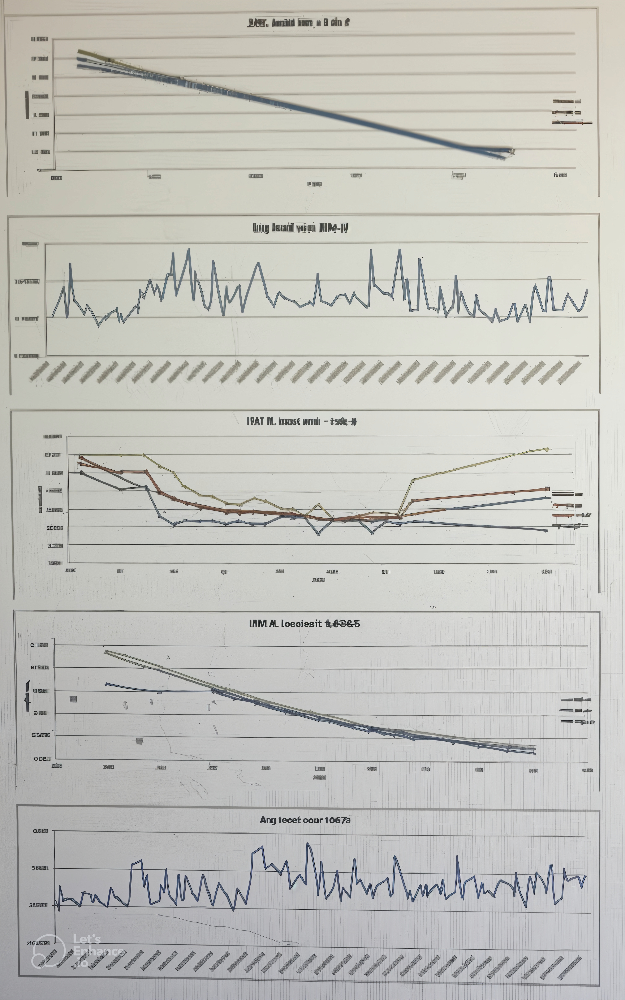
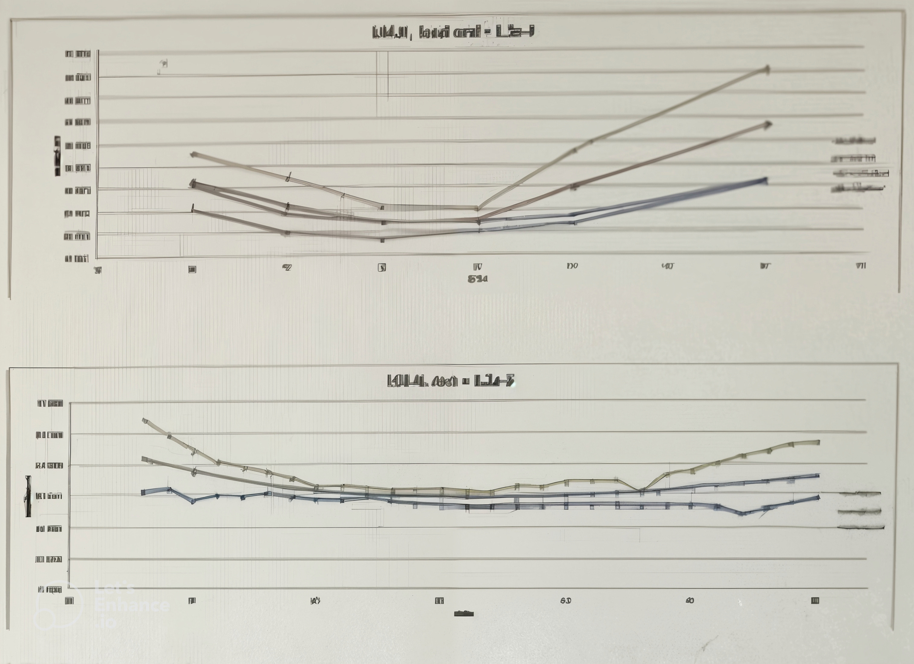
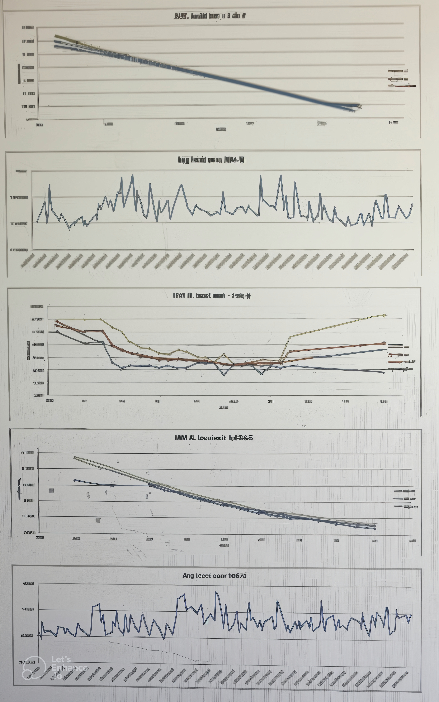
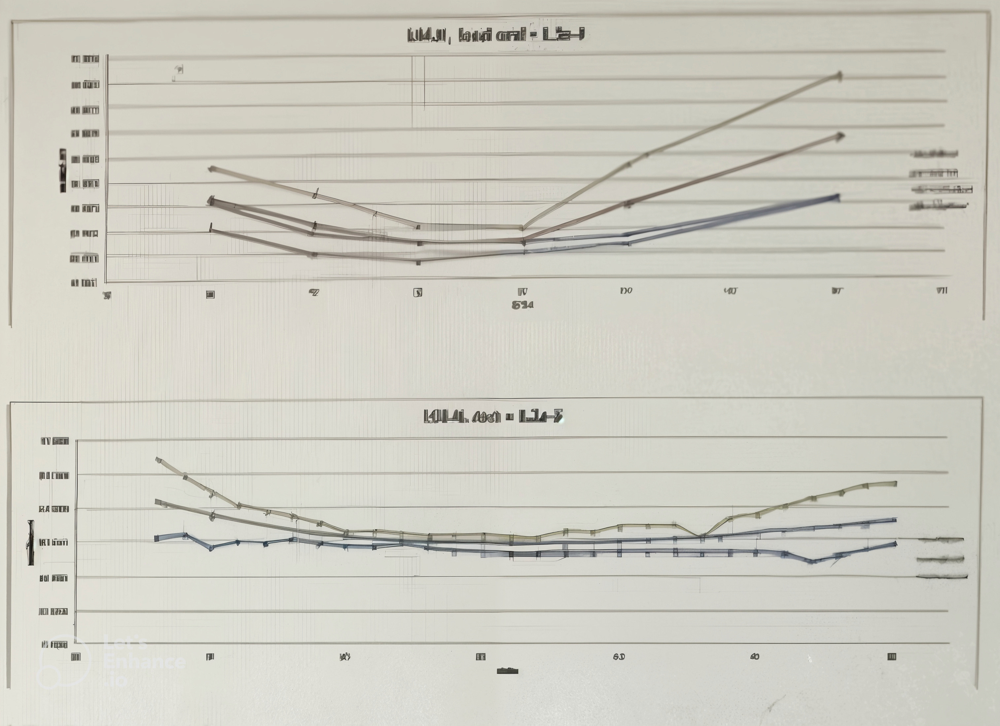
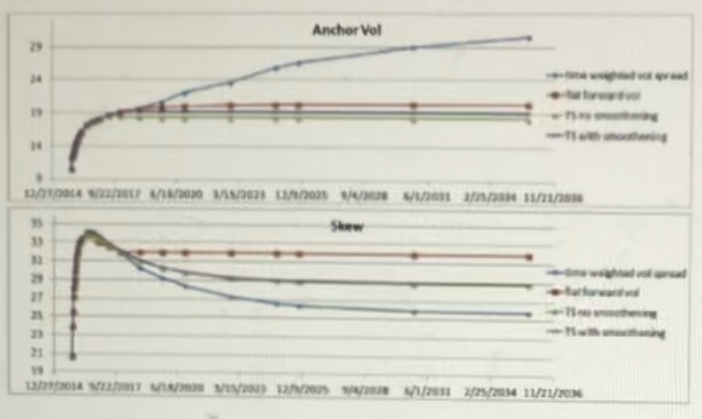
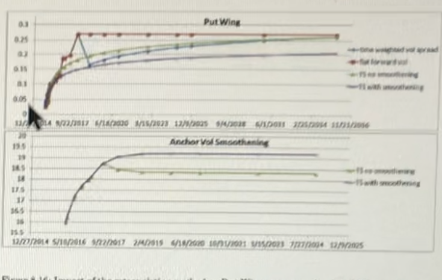

1.6.1. Implied Volatility Filter#
1.6.1.1. Table of Contents#
-
8. Tests & Outcome Analyses performed on Payoff / Model / Portfolio
1.6.1.2. 1. Executive Summary#
This document describes the Aleph implementation for the ASV (Advanced Stochastic Volatility) parametrized implied volatility surface fitter. It includes the details about the objectives for a robust parameter fit as well as the numerical routines used to achieve them. The main objectives are defined as follows:
Optional repo curve calibration for both American and European option quotes to detect the implied forward levels for each liquid maturity
Enforcing no arbitrage through cost and constraint functions while fitting ASV volatility surface parameters
Enforcing smooth parameter extrapolation beyond the last liquid maturity through term structures
Controlling the quality of the fit and its stability using bid/ask implied volatility data
The ASV volatility fitter provides efficient and robust calibration of volatility surfaces, making it particularly valuable for risk management and pricing applications. It takes European/American vanilla (Call/Put) option quotes along with repo and volatility fitting instructions as input parameters and returns fitted ASV volatility surface parameters.
The fitting process consists of the repo curve fitting, premium inversion followed by the volatility surface parameters fitting. Parameter fitting is done in the following sequence: local fit (per maturity, cross strikes), term structure fit (per parameter, optional), global fit (all maturities together using global cost function, optional) and interpolation/extrapolation for extra maturities. A numerical method, Brent algorithm is used for root finder procedures while NAG E04UFA routine (referred to as NMS throughout the document) is used for volatility surface parameters fitting.
The robustness of calibration depends on the quality and availability of quotes and the fitting is controlled by various parameters that are meant to remove/decrease the impact of the outliers, add memory from the previous fit, extrapolate for non-listed maturities, etc. Choice of these parameters impacts the fitting results and need to be set up properly.
Volatility fitter also performs extensive post-fit checks and validation procedures once the fitting process is finished, extending the fitting report with error/warning messages relating to the requested checks. Fitter doesnt reject the fitted result itself and lets the IT application to decide whether to accept or reject it based on the post-fit checks report.
The backtesting results for different underliers demonstrated stable fit results over a period of six months, with consistent performance across various market conditions.
1.6.1.3. 2. Scope#
The ASV volatility fitter model is designed to provide robust and efficient calibration of implied volatility surfaces across multiple asset classes and markets. Its primary application is in the pricing and risk management of derivative products.
1.6.1.3.1. 2.1. Model Purpose and Intended Usage#
The purpose of the implied volatility fitter model is to calculate the implied volatility of option quotes and fit the ASV parameters which minimizes the difference between the implied volatility and the parameterized implied volatility while controlling the calendar arbitrage and butterfly arbitrages. The scope includes both European and American options which covers major option markets including NYSE, NASDAQ, Eurex, and Asian exchanges. The resulting fitted volatility surface is used for pricing and risk management of various financial instruments, including:
Vanilla options
Exotic options (lookbacks, cliques, barriers)
Structured products (autocallables, reverse convertibles)
Hybrid products (equity-interest rate derivatives)
For simple products, the surface is used directly, whereas for more complex products it serves as a key input for calibrating advanced pricing models (local vol, LSV, hybrids etc).
1.6.1.3.2. 2.2. Conceptual Soundness#
The model employs a robust and computationally efficient approach to volatility surface fitting, validated through extensive backtesting and stress testing. Broadly speaking, there are two major approaches used by financial institutions to fit the parametrized volatility surface to the options market data:
Fitting by minimizing the difference between implied volatilities of option quotes and the parameterized curve implied volatilities. This approach involves quote inversion first and parameter fitting afterwards, making it comparatively faster.
Fitting by minimizing the difference between option quotes and the parameterized curve implied option prices. This approach is more time consuming since there are multiple option pricings for each parameter value change during the optimization process.
Volatility fitter inverts European/American option quotes and fits a parameterized curve to the corresponding implied volatilities. The inversion is done using European/American option price model along with the Brents root finder algorithm. NAG E04UFA routine is used to fit the ASV parameterized curve to the implied volatility points. The routine minimizes the cost function under certain constraints such as calendar or butterfly arbitrage where cost function is defined as a weighted sum of volatility mismatch squares. Each weight is a function of the Vega of an option struck at the corresponding strike which effectively puts more importance for fitting the points with higher Vegas more closely. Since Vega is the options sensitivity to volatility movements the resulting fitted volatility surface produces option prices that are close to option quotes that were used for fitting even though the minimization is done in volatility space.
The European/American option pricer models are both well researched and thoroughly tested (see [*] and []) while Brents method is well known and widely used root finder algorithm that is both robust and fast. NAG E04UFA routine is also a popular minimization algorithm used for various optimization problems.
There are several root finder algorithms that can be used for option quote inversion such as bisection, Newtons, secant, inverse quadratic interpolation etc. While bisection method guarantees that the algorithm converges to the root its not as fast as Brents method. Newtons, secant and inverse quadratic interpolation are open methods and dont guarantee that they will eventually converge to the root. Brents method is a combination of the bisection method, the secant method and inverse quadratic interpolation. At every iteration, Brents method decides which method out of these three is likely to do best, and proceeds by doing a step according to that method. This gives a robust and fast method, which therefore enjoys considerable popularity.
NAG E04UFA routine implements a sequential quadratic programming (SQP) method. SQP is an iterative method for nonlinear optimization with constraints. The advantage of SQP method is that its much faster and does not require computation of the Hessian matrix, which can be quite expensive both in terms of the symbolic computation and numerical evaluation.
The parameter fitting involves several stages including local fit (fits each maturity separately subject to the butterfly and calendar constraint), term structure fit (fits TS curves for each parameter as an initial guess for global fit), global fit (fits TS curves subject to the global cost and various constraints) and extrapolation (sets the TS implied parameter values for extra dates) which is the resulting fitted volatility surface. The quality of the fit is controlled through the post fit checks that includes local volatility quality, fitted vs implied volatility, volatility moves and grid volatility related checks.
This multi-step procedure is designed to have a good initial fit during the local fit and later smoothens the parameters over the maturities in TS fit to reduce the variance in the parameter values between fits (especially wing parameters that are mostly sensitive to data quality and noise and their contribution to the local cost function is relatively small). Besides smoothening TS curves are also used later on to extrapolate the parameter values for extended maturities. During global fit the TS parameters are adjusted to minimize the global cost consisting of the local fitting costs as well as to achieve further smoothening at the TS start point. Extrapolation step generated a volatility surface with extended maturities that came into used without TS parameters. The fitter also uses various constraints to make the fitted surface arbitrage free as much as possible.
1.6.1.4. 3. Product / Payoff / Portfolio#
1.6.1.4.1. 3.1. Product Description#
The Implied Volatility Filter is a comprehensive mathematical framework for constructing arbitrage-free volatility surfaces from market option data. The model implements the ASV (Anchored Stochastic Volatility) parameterization, which uses five key parameters (Anchor Vol, Skew, Smile, Call Wing, and Put Wing) to capture the volatility smile/skew across strikes while ensuring smoothness and consistency across maturities.
Unlike traditional interpolation methods, this filter:
Detects and removes arbitrage opportunities (both calendar and butterfly)
Handles sparse or noisy data through intelligent filtering mechanisms
Provides smooth parameter evolution across the term structure
Ensures wing behavior is controlled for extreme strikes
Accommodates both European and American option quotes within a unified framework
The outputs are designed to be consumed by various pricing engines, risk systems, and model calibration frameworks.
1.6.1.4.2. 3.2. Markets and Regions#
The Implied Volatility Filter has been designed and extensively tested across:
US Markets:
Single stock options (American-style exercise)
Index options (including SPX, European-style exercise)
ETF options (various exercise styles)
European Markets:
Single stock options (varying by country, predominantly European-style exercise)
Index options (including EURO STOXX, DAX, European-style exercise)
Dividend considerations specific to European markets
Asian Markets:
Single stock options (varying by country, mixture of American and European styles)
Index options (predominantly European-style exercise)
Different trading hour considerations
The model accounts for exchange-specific features including:
Different settlement conventions
Exercise style variations
Market-specific volatility pattern characteristics
Regional liquidity considerations
1.6.1.4.3. 3.3. Target Users#
Trading Desks:
Equity derivatives traders requiring accurate real-time volatility surfaces
Exotic products desks using the surfaces for model calibration
Volatility arbitrage traders identifying market anomalies
Delta-one traders analyzing forward curve implications
Risk Management:
Market risk teams calculating portfolio sensitivities
Scenario analysis teams running stress tests
Risk control teams setting volatility-based limits
Regulatory reporting teams calculating risk measures
Quantitative Teams:
Model validation teams verifying pricing accuracy
Research teams developing new volatility models
Quantitative developers implementing pricing libraries
Market data teams providing calibrated inputs to systems
Client-Facing Functions:
Structuring teams designing volatility-linked products
Sales teams quoting option prices based on the surface
Client valuations teams providing mark-to-market services
1.6.1.4.4. 3.4. Applications#
Direct Pricing Applications:
Vanilla option pricing and market making
Portfolio revaluation and mark-to-market
Greek calculations for hedging
Generation of volatility skew/smile charts for analysis
Model Calibration:
Local volatility model calibration for path-dependent options
Stochastic volatility model calibration (Heston, SABR, etc.)
Hybrid models combining equity and interest rate factors
Jump-diffusion models requiring consistent volatility inputs
Risk Management Applications:
VaR (Value at Risk) calculations using parameterized surfaces
Scenario analysis with controlled parameter shifts
Stress testing for extreme market movements
Sensitivity analysis across multiple dimensions
Structured Products:
Barrier option pricing requiring smooth local volatility
Cliquet and forward-starting option pricing
Lookback and Asian option pricing
Volatility-linked note valuation
Additional Applications:
Relative value analysis between similar underlyings
Volatility trading strategy development
Implied correlation extraction from index vs. components
Forward volatility extraction for volatility swap pricing
1.6.1.5. 4. Model / Methodology#
This section is relevant for model/methodology/engine centric LTAs/Risk models
1.6.1.5.1. 4.1. Description#
The volatility fitter model provides an efficient and robust framework for volatility surface calibration, validated through extensive backtesting and stress testing. It takes put/call option quotes and returns a set of parameters that constitute a fitted volatility surface, which is crucial for both pricing and risk management applications.
The process begins with an optional repo fitting, followed by premium inversion and parameter fitting. Repo fitting is performed to fit the implied forward levels per each maturity implied by options market, ensuring smooth transition from OTM put implied vols to OTM call implied vols near ATM strikes.
The parameter fitting phase starts with the local fit process during which ASV parameters are fitted per maturity subject to calendar and butterfly arbitrage constraints. To make the parameter values curves smooth over the time axis, term structure fits per parameter are performed. The fit minimizes the difference between parameterized curve implied values and fitted parameter values per maturity from local fit. To further optimize the smoothened term structure implied parameter values, global fit is performed afterwards that minimizes the difference between the implied volatility and the parameterized term structure implied volatility subject to global constraints. The final step is to extend the fitted surface for longer maturities through extrapolation and run post fit checks to assess the quality of the fit.
1.6.1.5.1.1. 4.1.1. Overview#
The volatility fitter model performs the following steps to fit the ASV parameters:
Implied repo calibration: fits forward curve through the repo curve to the options market implied forward levels (see below in 4.1.2)
Volatility inversion: inverts the option prices into Black Scholes implied volatilities and generates the target mid volatilities (see below in 4.1.3)
Volatility surface parameter fitting: fit the ASV parameterized curves to the target mid volatilities (see below in 4.1.4)
Two-stage volatility surface parameter fitting: fit the ASV parameterized curves to the target mid volatilities, generate the new quotes with fitted volatility surface and then fit the ASV parameterized curves to the new quotes with different market data (see below in 4.1.5)
1.6.1.5.1.2. 4.1.2. Implied Repo Calibration#
The objective is to adjust the forward curve through the repo curve so that the implied volatilities of call and put options with the same strike and maturity match. Repo fitting can be skipped by setting the forward curve source to Input Forward in the fitting instructions, where forward curve source can be one of the following:
Implied Forward, fits repo curve and uses the new forward curve for both premium inversion and volatility surface anchor strikes,
Input Forward, no repo fitting,
Input Forward For Anchoring Only, fits repo curve and uses the new forward curve for premium inversion only,
Forward With Averaged Repo, fits repo curve and uses the new forward curve with the averaged repo curve, which is mentioned before section 4.1.2.1, for both premium inversion and volatility surface anchor strikes,
Forward With Transformed Repo, use the forward curve with transformed repo curve, (see section 4.1.5), for both premium inversion and volatility surface anchor strikes.
A threshold repo_fit_start_offset (default 0) controls the starting maturity. The repo fit is skipped if the maturity is less than or equal to the pricing date plus the repo_fit_start_offset.
Since at each maturity different quotes may imply different forward levels only the most precise option quotes are used. Given that the quotes with strikes closes to the at the money level (ATM) are more accurate, the target forward level is computed as the average of num_strikes_for_repo_fit forward values implied by the put/call pairs with strikes closest to the switching strike, half above and the other half below. The default num_strikes_for_repo_fit is two. The switching strike is the smallest list strike that is satisfying two requirements: price is smaller than put mid price and call vega is bigger than 20% of put vega.
The selection methodology for these strikes is described in 4.1.2.1. It may happen that some strikes dont have both put and call option quotes, and they will be filtered out. If none of the strikes has both put and call quotes and there are no fitting is done and no error message is issued. If there are both put and call strikes available, then no fitting is done and the repo rate is based on the repo rate of the previous maturity (if there is no previous fitted maturity then input repo rate is used for that maturity (warning message will be included in the final report)). If there are more than num_available_strikes, the num_excluded_strikes strikes that have worst implied forward values comparing to the median forward value are filtered out. When the number of valid strikes is smaller or equal to num_excluded_strikes, the strikes with respect to the median forward value are removed.
Furthermore, in case if the pricing date is different from the spot date of the original forward curve we first re-anchor the forward to the pricing date. This will simplify the fitting algorithm due to the fact that we will always move forward while bootstrapping the repo curve. Once re-anchored, the original spot date is added to the fitting maturities list so that we also fit to the original spot date during bootstrapping.
The process for implied forward calculation per each of these valid strikes is different for American and European options and can be found below in 4.1.2.2 and 4.1.2.3. Once we determined the target forward level we use the Brent algorithm to find the corresponding repo rate which we add to the repo curve and move to the next maturity. After going over all the fitting maturities the resulting bootstrapped repo curve is used to construct a new forward curve which we re-anchor back to the original spot date. The next step is to cap and floor the resulting repo rates as well as the corresponding repo moves. At the end, the calibrated repo curve is extrapolated for the extra-fitting dates that are after the last fitting maturity. The extrapolation method is controlled repo_extrapolation_method. In the default no spread mode, the original repo curve rates will be used. There is a flat spread mode. In the flat spread mode, the difference between the original repo rate and the fitted repo rate at the last fitting maturity will be calculated, and it will be added to all the original repo curve rates after last fitting maturity.
In addition, a repo rate smoothing report is generated based on either Kalman filtering or exponential smoothening logic controlled by a flag. The logic for updating the input repo is described in Appendix A.3.
1.6.1.5.1.2.1. 4.1.2.1. Bracketing Strikes Selection#
The strike above ATM is calculated using mid premiums, i.e. the first strike for which valid call option quotes exist or the corresponding put strike above-assuming the strikes in an increasing order. If the latter condition is not satisfied then the ATM is determined as the highest strike for which both put and call quotes exist. In case if there is no common strike shared between put and call option quotes, the ATM is determined as the highest strike for which valid put quote exists. Otherwise it is based on the previous forward curve, i.e. the smallest strike that is above the input forward level. The second strike is just below the first strike or in case if the flag enforce equal put call instructions is set to true then it will be the strike below the first strike for which both put and call options exist.
1.6.1.5.1.2.1.1. 4.1.2.2. European Options#
For european options the implied forward level is calculated using the call/put parity formula:
Where:
\(F_t\) is the implied forward at time t
\(Call_t\) and \(Put_t\) are the call and put prices
\(DF_t\) is the discount factor
\(K_t\) is the strike price at time t
1.6.1.5.1.2.1.2. 4.1.2.3. American Options#
For American options the repo rate is calibrated in such a way that implied volatilities of the put and call options match within a tolerance. Starting from the initial repo from the previous forward curve, the Brent root finding algorithm is used to find the zero of the function:
Where:
\(\sigma_{put}\) is the put implied volatility
\(\sigma_{call}\) is the call implied volatility
The Brent root finding algorithm is used to find the zero of the function \(f(repo) = MidImplVolPut - MidImplVolCall\), where the put and call quotes are inverted at every iteration using the current iterating repo value. The root finder finishes the search when the change in repo is less than the repo tolerance. Otherwise it fails to find the root when either maximum number of iterations is reached or both put and call inversions failed. In case if only put or call inversion failed, the failed implied volatility value is replaced with 0 and the search is continued. This may happen in cases when the initial repo is too high/low and the resulting intrinsic value of the option is greater than the option quote. However, since the put implied volatility is a decreasing function of repo and the call implied volatility is an increasing function of repo, root finder will search in the direction that will make it possible to invert both put and call quotes in case if the initial repo was too off. We also note that this approach keeps the objective function continuous.
1.6.1.5.1.3. 4.1.3. Volatility Inversion#
The volatility inversion process provides an efficient and robust method for converting option prices to implied volatilities, validated through extensive testing. It follows the same steps for both European and American options where all quotes must have the same type and can be one of the following: Volatility, Price, Forward Price type.
If the quote type is set to Volatility, the fitter skips the repo and premium inversion steps and does parameter fitting only using the volatility quotes. For Forward Price type quotes, they are discounted using the discount curve from the market data followed by the same steps as in the case of Price type.
The target implied volatilities are the mid volatilities that are calculated by either inverting the mid quotes (the average of the bid/ask quotes) or averaging the bid/ask implied volatilities. The inversion is done using the Brent root finder algorithm to find the zero of the function:
Where:
\(Q\) is the option quote
\(P(\sigma)\) is the option price as function of volatility
The Brent algorithm provides robust and efficient convergence, with detailed implementation available in []. Failed inversions are handled by adjusting the search bounds and retrying with modified parameters.
To calculate the option price for a given volatility value, we specify through the quote inversion instructions the pricing engine parameters as well as the exchange code that include exchange calendar, premium payment date and interest rate convention, exercise type for American options (e.g. German exercise) and expiry rule. So quote and the exchange information together specify the product that is priced using the provided pricing engine where the engine is either a closed-form approximation solver for American options or analytic Black Scholes solver for European options. The details about the pricing functions for American and European options are specified in the [*] and [] respectively.
American and European pricers can be found in [*] and []. Once the Brent algorithm finishes its routine and returns the root for f(vol) function, the Vega of the options is approximated using finite difference with 1 basis point bump. These Vega values are later used for the quote weighting during the fitting. In addition, quotes also have an optional standard deviation input. These are used as a weight adjustment factor during the fitting. Their usage is described in 4.1.4.1.
1.6.1.5.1.4. 4.1.4. ASV Volatility Surface Fitting#
This section describes the ASV volatility surface parameter fitting process, which employs advanced optimization techniques to ensure robust and accurate results. The input data for the process includes:
Initial volatility surface
Forward curve with previous or newly fitted repo curve
Pricing date
Liquid maturities dates
Implied volatilities (both bid, ask and mid)
Corresponding strikes and weights
Fitting instructions specifying the fitting procedure details
Optional quality instructions
The fitting procedure is divided into three main phases:
1.6.1.5.2. Phase 1: Preprocessing#
Quote filtering: Removes outliers and invalid quotes using statistical methods
Initial setup: Re-anchors the initial volatility surface and sets up weights for cost function
Local fitting per liquid maturity: Fits parameters per maturity through constrained minimization of local cost function
Interpolation for poor maturities: Interpolates parameter values using neighboring fitted maturities
1.6.1.5.3. Phase 2: Core Fitting#
Optional term structure fitting: Fits term structure (TS) curves for each ASV parameter using smoothing splines
Optional global fitting: Refines TS curves through constrained minimization of global cost function
Smoothing with quality: Applies kernel smoothing to ASV parameters across maturities
Parameter interpolation/extrapolation: Handles extra non-liquid maturities
1.6.1.5.4. Phase 3: Post-processing#
Optional grid volatility generation: Creates volatility grids for downstream systems
Calendar volatility conversion: Handles calendar-specific volatility adjustments
Optional overlay volatility surface generation: Creates additional volatility surfaces
Optional post-fit checks: Performs quality assurance and validation
Both the local and term structure fitting are usually preliminary stages of global fitting, with the global fitting result being used for the final extrapolated volatility surface. However, users can choose to perform only local or term TS fitting by specifying it in the fitting instructions.
The framework also supports an InversionOnly mode, which skips the parameter fitting phase and returns the inverted volatilities after the volatility inversion step. This mode is activated by setting fitting_mode = InversionOnly.
Performance optimizations include parallel processing of liquid maturities and efficient memory management for large datasets. Error handling includes robust fallback mechanisms and detailed logging of fitting progress.
1.6.1.5.4.1. 4.1.4.1. Quote Filtering#
The quote filtering process employs rigorous statistical methods to ensure data quality and fitting robustness. It processes all inverted volatilities from valid out-of-the-money put/call option quotes (where both bid and ask are positive). The filtering is performed per maturity and removes quotes based on the following criteria:
1.6.1.5.5. Data Validity Checks#
Invalid bid, ask, or mid volatility (occurs when volatility inversion fails due to bad data)
1.6.1.5.6. Spread-Based Filters#
bid volatility / ask volatility < maximum_relative_spread (default: 0.8)
ask volatility - bid volatility > maximum_absolute_spread (default: 0.1)
|(ask volatility - bid volatility) - average_spread| > maximum_STD * spread_STD
average_spread and spread_STD are calculated per liquid maturity
maximum_STD is typically set to 3 for 3-sigma filtering
1.6.1.5.7. Option Characteristics Filters#
Black-Scholes Delta corresponding to the strike of the mid implied volatility data < minimum_Delta_threshold (default: 0.05)
The filtering thresholds are determined through extensive backtesting and can be adjusted through the quality instructions. The process uses robust statistical methods, including outlier detection using modified z-scores and interquartile ranges.
Filtered quotes are logged with detailed rejection reasons to support debugging and analysis. The impact of filtering on fitting results is monitored through quality metrics, including:
Percentage of quotes removed per maturity
Distribution of rejected quotes across strike ranges
Impact on fitted volatility surface stability
1.6.1.5.7.1. 4.1.4.2. Initial Setup For The Fitting Process#
The initialization process prepares the volatility surface for fitting through several key steps:
1.6.1.5.7.1.1. 1. Surface Re-anchoring#
Adjusts the initial volatility surface to forward levels implied by the repo-fitted forward curve
Modifies only the Anchor Vol parameter values while keeping others constant
Uses linear interpolation for Anchor Vol term structure adjustments
Skips re-anchoring when extrapolation type is TdlcmSpecific
1.6.1.5.7.1.2. 2. Maturity Classification#
Marks maturities with < 4 quotes as poor
Allows manual designation of poor maturities via instructions
Handles edge cases where all maturities are marked as poor
Sets all parameters except Anchor Vol for maturities with 1 quote
Interpolates/extrapolates parameters for remaining maturities
1.6.1.5.7.1.3. 3. Weight Initialization#
Uses option Vega for error weighting with the formula:
Where:
\(\) typically ranges from 1.0 to 3.0
Emphasizes near-the-money quotes due to higher Vega values
1.6.1.5.7.1.4. 4. Standard Deviation Adjustment#
For quotes with non-empty stdcv fields:
For quotes with empty stdcv fields:
1.6.1.5.7.1.5. 5. Quality-Based Weighting#
When using bid/ask quality:
1.6.1.5.7.1.6. 6.Validation and Performance#
Extensive validation of initialized parameters
Detailed logging of initialization steps
Performance optimizations for large datasets
Robust error handling for edge cases
1.6.1.5.7.2. 4.1.4.3. Automatic Poor Maturity Selection#
The automatic poor maturity selection process uses quality metrics to identify unreliable maturities:
1.6.1.5.7.2.1. Selection Criteria#
Maturity quality < threshold_mult threshold average_quality
average_quality: Average across all maturities
threshold_mult and threshold: User-configurable parameters
1.6.1.5.7.2.2. Process Details#
Iterates through maturities in reverse order
Sets threshold_mult to 1.0 after first poor maturity is found
Regenerates volatility inversion report if poor maturities are detected
A maturity is considered poor if any of these conditions are met:
Less than 4 valid quotes available
Quality metric below threshold (see section 4.1.4.3)
Explicitly marked as poor in fitting instructions
Bid-ask spreads exceed configured thresholds
1.6.1.5.7.3. 4.1.4.4. Conditional Fit#
The conditional fit process provides additional control over the fitting procedure:
1.6.1.5.7.3.1. Initial Checks#
Cancels fitting if conditional fit instruction is provided and conditions are met
Updates inverted spread report:
Initializes with current spread (weight = 1) if no previous report exists
Averages with previous report otherwise (see Appendix A.3)
1.6.1.5.7.3.2. Maturity Evaluation#
For maturities after conditional_fit_start_hour:
Marks as hit threshold if: $\( inverted\_spread > average\_spread \cdot fit\_spread\_threshold \)$
fit_spread_threshold defaults to 2.0
1.6.1.5.7.3.3. Spot Move Evaluation#
Marks spot move as hit threshold if:
Where:
spot_move_stdcv: User-configurable parameter
vol: 7-day volatility from initial surface
T: Time fraction between build date and pricing date
1.6.1.5.7.3.4. Fitting Decision#
If num_hit_threshold > num_max_hits:
cancel_fitting = true (if spot move doesnt hit threshold)
cancel_fitting = false (if spot move hits threshold)
Resets all maturities to not hit threshold
If cancel_fitting = false:
Marks hit threshold maturities as poor
1.6.1.5.7.3.5. Validation and Quality Control#
Extensive validation of initialized parameters through unit tests
Detailed logging of initialization steps for debugging
Performance optimizations for handling large datasets efficiently
Robust error handling for edge cases and invalid inputs
Automated regression testing of key functionality
Continuous monitoring of fitting quality metrics
Detailed logging of conditional fit decisions
Robust error handling for edge cases
Performance optimizations for large datasets
1.6.1.5.7.4. 4.1.4.5. Local Fitting Per Liquid Maturity#
Local fit is performed to fit ASV parameters per each listed maturity subject to the arbitrage constraints. The fitted results will be used either directly in the final fitted results or as an input to the TS fitting stage.
1.6.1.5.7.4.1. Key Parameters and Variables#
ASV Parameters:
Anchor Vol: Base volatility level controlling the overall surface height
Skew: Linear slope component capturing the asymmetry of the volatility smile
Smile: Quadratic curvature parameter controlling the U-shape of the volatility curve
Call Wing: Exponential term controlling the behavior of OTM call options
Put Wing: Exponential term controlling the behavior of OTM put options
Optimization Parameters:
calendar_arb_coeff: Weight for calendar arbitrage penalty term (default: 1.0)
local_seed_coefficient: Array of 5 coefficients controlling memory from initial surface
param_diff_tolerance: Tolerance for parameter differences between maturities
distance_decay: Controls the decay of parameter smoothing across maturities
diff_power: Power parameter for difference calculations (fixed at 4.0)
rank_adjust_mult: Multiplier for maturity rank adjustment (fixed at 0.2)
Grid Parameters:
Variance_ATM: Total variance at the at-the-money strike
call_stdcv: Standard deviation multiplier for call wing constraint points
put_stdcv: Standard deviation multiplier for put wing constraint points
The first step in local parameter fit is to reorder the liquid maturities in order to accommodate calendar arbitrage checks efficiently. Since calendar arbitrage check is performed on the wing of the parameterized curves between to be fitted maturity and its fitted neighboring maturities we need to start from a maturity that has more information relating to maturities of OTM calls/puts.
If bid/ask quality data is available and the flag reorder with quality is set to true in the instructions then the maturities are reordered in decreasing order with respect to the qualities of maturities. Otherwise reordering of liquid maturities is done the following way:
find the maturity which has the most number of mid vols excluding any maturities which fall within 2 weeks of the fitting date or are after half a year horizon.
add all the liquid maturities after it in increasing order
add all the liquid maturities before it in decreasing order.
Once reordering done, ASV parameters are fitted per each non-poor maturity using NAG routine E04UFA. This routine minimizes an arbitrary smooth function subject to constraints (which may include simple bounds on the variables, linear constraints and smooth nonlinear constraints) using a sequential quadratic programming (SQP) method. Starting from the first maturity in the reordered maturities list the local fitting procedure performs the following steps per each non-poor maturity:
For each parameter initialize the lower and upper boundaries as specified in the fitting instructions and set implied parameter values from the initial volatility surface as an initial guess for them. In case if the implied Anchor Vol parameter is not valid, we initialize it to zero and Anchor Vol to 20% so that we have a valid starting point for the NAG optimizer.
Set up the local cost (objective) function as the sum of the following costs:
weighted sum of the squared errors between the target mid volatilities and volatility values implied by the current set of ASV parameters. This sum is normalized by dividing by the sum of the used weights where the weights are the adjusted Vega values described in the section 4.1.42:
\[ mismatch\ cost(t_j) = \frac{\sum_{i=1}^N weight(k_i,t_j) * (ASV(k_i,t_j) - mid\ vol(k_i,t_j))^2}{\sum_{i=1}^N weight(k_i,t_j)} \]where \(N\) is the number of quotes for maturity \(t_j\).
calendar arbitrage cost that penalizes for the negative forward variance between current liquid maturity and the fitted maturities before and after it. If there is a fitted liquid maturity before (after) current fitting maturity then generate a uniform grid consisting of 11 points, ranging from \(-6.0 * \sqrt{Variance_{ATM}}\) to \(+6.0 * \sqrt{Variance_{ATM}}\) where \(Variance_{ATM}\) is the total variance at the at-the-money strike of the current maturity. Total variances at the strikes \(k_i = anchor\_strike * exp(grid_i), i = 1,13\) are calculated and the cost is then set as:
\[ calendar\_cost(t_j) = \left( \sum_{i=1}^{13} \min \left( 0, \frac{ASV(k_i, t_{curr})^2 * t_{curr} - ASV(k_i, t_{prev})^2 * t_{prev}}{t_{curr} - t_{prev}} \right) + \sum_{i=1}^{13} \min \left( 0, \frac{ASV(k_i, t_{next})^2 * t_{next} - ASV(k_i, t_{curr})^2 * t_{curr}}{t_{next} - t_{curr}} \right) \right) / 13 * calendar\_arb\_coeff \]Note that the cost will contain both sums (next and previous) only when there are fitted maturities both before and after the current fitting maturity (which may be the case when the reordering of the maturities was done with respect to the bid/ask quotes quality)
reduce wing coefficient * (|WingPut| + |WingCall|). This is to penalize for large absolute wing coefficient values in order to capture most of the curvature through the Smile parameter. This allows to reduce/control the wings for deep OTM strikes
cost for moving away from the initial volatility surface parameters in the form of:
\[ \sum_{i=1}^{5} local\_seed\_coefficient_i * mismatch_i^2 \]where \(mismatch_i\) is the difference between the \(i-th\) ASV parameter values. Note that this cost can be disabled through a flag in fitting instructions.
cost for having different parameters compared with the left and right neighbors. If \(param\_smooth\_ts\_instructions\) (user input) is provided, the \(param\_diff\_tolerance\) is non-empty, and one of the left and right maturity is valid, the cost for the current maturity \(t_{curr}\) is as follows:
\[ smooth\_ts\_cost(t_{curr}) = multiplier \cdot \sum_{j=1}^{5} param\_diff_j \]The value of \(multiplier\) depends on the \(adjust\_for\_init\_cost\) flag, which is hard-coded as true at the moment. When this flag is true, \(multiplier\) equals:
\[ maturity\_rank\_adj \cdot short\_term\_decay\_multiplier \cdot initial\_local\_cost(t_{curr}) \]. Otherwise, it equals to \(maturity\_rank\_adj \cdot short\_term\_decay\_multiplier\). The parameter \(maturity\_rank\_adj\) equals
\[ 1 - exp(-rank\_adjust\_mult \cdot maturity\_rank) \]In the current implementation, \(rank\_adjust\_mult\) is hard-coded to 0.2. \(maturity\_rank\) is the ranked maturity based on quote quality. The value of \(short\_term\_decay\_multiplier\) depends the value of \(short\_term\_decay\). If this parameter is positive and the \(t_{curr}\) has a left maturity, \(short\_term\_decay\_multiplier\) is set to:
\[ \left[ 1 - exp \left( -t_{left} / short\_term\_decay \right) \right]^{diff\_power} \]Otherwise, it is set to 1. The parameter \(short\_term\_decay\) is user input; \(diff\_power\) is hard-coded to 4.0 (the meaning of the number is not documented). For j-th ASV parameter, \(param\_diff_j\) equals
\[ left\_distance\_mult_j \cdot diff\_left_j^{diff\_power} + right\_distance\_mult_j \cdot diff\_right_j^{diff\_power} \]If the left maturity exists,
\[ diff\_left_j = \frac{param_j(t_{curr}) - param_j(t_{left})}{param\_diff\_tolerance_j} \]\[ left\_distance\_mult_j = exp \left( -\frac{t_{curr} - t_{left}}{distance\_decay} \cdot diff\_power \right) \]Here, \(distance\_decay\) is user input, \(param_j(t_{curr})\) is the \(j\)th ASV parameter of the current maturity. When \(distance\_decay\) is zero, \(left\_distance\_mult_j\) is set to 1. Similarly, if the right maturity exists,
\[ diff\_right_j = \frac{param_j(t_{curr}) - param_j(t_{right})}{param\_diff\_tolerance_j} \]\[ right\_distance\_mult_j = exp \left( -\frac{t_{right} - t_{curr}}{distance\_decay} \cdot diff\_power \right) \]When \(distance\_decay\) is zero, \(right\_distance\_mult_j\) is set to 1.
Fix the Smile, Call and Put Wings parameters at the initial values and run the NAG routine to get the best fit for Anchor Vol and Skew parameters using the local cost function specified above.
Run NAG routine one more time to fit all 5 parameters together.
Set up the following optional local constraints:
butterfly constraint: generate a uniform grid consisting of 101 points ranging from \(-6.0 * \sqrt{Variance_{ATM}}\) to \(+4.0 * \sqrt{Variance_{ATM}}\) where \(Variance_{ATM}\) is the total variance at the anchor strike of the current maturity. Calculate the total variances at the strikes \(strike_i = anchor\_strike * exp(grid_i), i = 1, 101\) and use them to evaluate the denominator of the Dupires formula on each grid point using:
\[ denum_i = 1.0 - \frac{y_i \cdot \partial \sigma_i}{\sigma_i \cdot \partial y_i} + \frac{1}{2} \frac{y_i^2}{\sigma_i^2} \left( \frac{\partial \sigma_i}{\partial y_i} \right)^2 + \frac{1}{2}\frac{\partial^2 \sigma_i}{\partial y_i^2} \]where \(\sigma_i\) is the total variance for the \(strike_i\) and \(y_i = grid_i\). If \(\min(denum_i) < 0\) then the constraint is violated.
calendar constraint: calculate the forward variance between the current fitting maturity and the neighboring fitted maturities on Call and Put wings (both options). The distance of the wings from the anchor strike is controlled through the \(call\_stdcv\) and \(put\_stdcv\) inputs in instructions and are as follows: \(Call Wing = anchor\_strike * exp(call\_stdcv * \sqrt{Variance_{ATM}})\) and \(Put Wing = anchor\_strike * exp(put\_stdcv * \sqrt{Variance_{ATM}})\) where \(Variance_{ATM}\) is the total variance at the anchor strike of the current maturity and the neighboring fitted maturity. If
\[ min(Variance_{CW,current} - Variance_{CW,left}, Variance_{PW,current} - Variance_{PW,left}, Variance_{CW,right} - Variance_{CW,current}, Variance_{PW,right} - Variance_{PW,current}) < 0 \]then the constraint is violated where CW stands for Call Wing and PW stands for Put Wing. The reason only two points are used instead of multiple strikes is that NAG optimizer usually fails to find a feasible point satisfying the constraint for multiple points or the works fine with two points. Given the smooth shape of the ASV parameterized curve and the fact that listed strikes are usually free of the calendar arbitrage the two point checks on the wings will remove the arbitrage most of the time.
Check whether the current fitted parameters violate the above constraints. If it is the case, fix the Anchor Vol and Skew parameters and run NAG routine again with the same cost function but now subject to the local constraints.
Update the volatility surface with the results, mark the maturity as fitted and move on to the next maturity in the reordered maturities list.
1.6.1.5.7.4.2. 4.1.4.6. Poor Maturity Interpolation#
After fitting ASV parameters for all the non-poor maturities parameter values corresponding to the poor maturities are interpolated using its neighboring fitted maturities. For each poor maturity the following steps are performed:
If there are two neighboring fitted maturities for the current poor maturity then do linear interpolation in variance space for the Anchor Vol parameter while for the other 4 parameters do linear interpolation in time weighted values, i.e. linearly interpolate between \(param_{prev} * t_{prev}\) and \(param_{next} * t_{next}\) and divide by \(t_{current}\). If there is only one neighboring fitted maturity then copy the parameter values from it. There is only one exception for the Anchor Vol parameter in the case when there is no fitted maturities after the poor maturity but at the same time there are more than one fitted maturity before it. In that case we do linear extrapolation in variance using the two prior fitted maturity values.
In case if there are two or more target mid volatilities for the poor maturity which is earlier than the time threshold specified in instructions then instead of using the interpolated value of Anchor Vol parameter try to fit it to the available data. Fitting is done by running NAG routine without any constrains using the local cost function described earlier. This fitting is disabled for the maturities that are marked specifically as poor through the instructions.
Set up the optional local constraints described earlier and check whether the current fitted parameters satisfy them. If it is not the case, fix the Anchor Vol, Skew and Smile parameters and run NAG routine with the same cost function but now subject to the local constraints.
Update the volatility surface with the results, mark the poor maturity as fitted and move on to the next poor maturity in the poor maturities list.
The resulting volatility surface is added to the fitting report as Local result.
1.6.1.5.7.4.3. 4.1.4.7. Optional Term Structure Fitting#
The ASV volatility surface parameterization includes optional term structure (TS) parameters for each ASV parameter. Each TS has its own start time after which it overrides the local (per-maturity) parameters, configurable through fitting instructions.
Two parameterization types are available:
Smooth Term Structure
Uses double or single exponential interpolation, with separate terms controlling short-term and long-term behavior.
For double exponential case:
\[ P(t) = a \cdot e^{-10t/\tau} + b \cdot e^{-t/\tau} + c \]For single exponential case:
\[ P(t) = P_0 + b \cdot e^{-t/\tau} + c \]The functional form factors are derived by solving the system of equations using these parameters. For the single exponential case, it is defined by only 3 parameters (\(P_0\), \(P_{\infty}\) and \(\tau\)), with \(P_1\) and \(T_1\) (internally set to 1 year) set such that \(a = 0\) and \(P_1 = b \cdot e^{-T_1/\tau} + c\).
Where:
\(P(t)\) is the parameter value at time \(t\)
\(P_0\) is the parameter value at \(T_0\) (fixed at 1 day)
\(P_{\infty}\) is the terminal parameter value
\(a\), \(b\), \(c\) are derived coefficients
\(\tau\) is the decay time parameter
Key Parameters:
\(P_0\): Initial parameter value at \(T_0\) (fixed at 1 day)
\(P_{\infty}\): Terminal parameter value at \(T_{\infty}\) (fixed at 10 years)
\((P_1, T_1)\): Parameter value and time at intermediate point
\(\tau\): Decay parameter controlling convergence speed to \(P_{\infty}\)
Non-smooth Term Structure
Uses piecewise power interpolation with the same parameter set but different internal fixed points:
\(T_0 = 1\) day
\(T_{\infty} = 5\) years
The functional form is:
\[\begin{split} P(t) = \begin{cases} \frac{t}{t_0} \left( P_0 t_0 + (P_1 t_1 - P_0 t_0) \frac{t - t_0}{t_1 - t_0} \right), & t_0 \leq t < t_1 \\[2ex] \frac{1}{t^\tau} \left( P_1 t_1^\tau + (P_{\infty} t_\infty^\tau - P_1 t_1^\tau) \frac{t^\tau - t_1^\tau}{t_\infty^\tau - t_1^\tau} \right), & t_1 \leq t \end{cases} \end{split}\]where \(\tau\) is the decay parameter controlling the power law behavior.
1.6.1.5.7.5. 4.1.4.8. Optional Global Fitting#
Global fitting is performed only when the previous TS fitting step was successful (requiring at least 3 data points for TS parameter fitting). The TS fitting results serve as initial guesses for the global fit, which further optimizes them to minimize the global cost function and eliminate arbitrage opportunities. The Global fitting process consists of these steps:
Set up the global cost function as the sum of:
Local costs for each liquid maturity up to the TS cutoff time:
Uses the same local costs described in the local fit section
Seeding (memory) cost is disabled
Calendar cost is calculated only between the current maturity and its prior neighbor
Cost for deviating from initial volatility surface TS parameters (if any):
\[ \sum_{i=1}^{25} TS\_seed\_coefficient_i \cdot mismatch_i^2 \]where \(mismatch_i\) represents the difference between the \(i\)-th TS parameters. Note: For Single Exponential TS type, costs for \(P_0\), \(P_1\), and \(T_1\) parameters are disabled due to the constraint requiring exact fit to the last liquid maturitys parameter value. This cost can be disabled via fitting instructions.
Execute NAG routine to fit all 25 TS parameters (5 TS parameters per ASV parameter).
Implement optional global constraints:
Butterfly constraint:
Check local butterfly constraint for each liquid maturity
Global constraint is violated if any local constraint is violated
Calendar constraint:
Check local calendar constraint for each liquid maturity
Only evaluate between current maturity and prior neighbor
Global constraint is violated if any local constraint is violated
Minimum wing constraint:
Evaluates Call/Put Wing TS implied parameter values at 30-year horizon
Violation occurs if values fall below minimum wing value in fitting instructions
Helps maintain positive wing values for long maturities
Enforce local bounds constraint:
Check TS implied parameter values for every ASV parameter
Compare against local lower and upper bounds for each liquid maturity
Constraint is violated if any implied values fall outside bounds on any liquid maturity
Validate and adjust TS parameters:
Check constraint violations:
Evaluate current fitted TS parameters against all constraints
If violations exist:
Fix \(T_1\) and \(Decay\) parameters for all ASV parameters
Re-run NAG routine with global cost function under constraints
If violations persist and magnitude increases:
Revert to parameters from unconstrained fit
Apply smoothness cost:
Add non-smoothness penalty to global cost function: $\( \sum_{i=1}^{5} smoothing\_coefficient_i \cdot mismatch_i^2 \)$
where \(mismatch_i\) represents slope difference for \(i\)-th ASV parameter:
For Anchor Vol: forward volatility difference
For other parameters: time-weighted value ratio difference Slopes are calculated between:
Before TS start: TS start time and prior liquid maturity
After TS start: TS start time and next liquid maturity
Final optimization:
If any \(smoothing\_coefficient_i \neq 0\):
Re-run NAG routine with updated cost function
If constraints are violated and magnitude increases:
Revert to previous steps parameters
Update and report:
Apply fitted TS parameters to volatility surface
Add result to fitting report as Global result
1.6.1.5.7.5.1. 4.1.4.9. Optional Smoothing with Quality#
The volatility surface fitter implements quality-based parameter smoothing to enhance surface stability and consistency. This process is executed under specific conditions:
Activation Requirements:
Quality metrics exist for all ASV parameters
Memory utilization is active (use_memory = true)
Quality smoothing is enabled (smooth_with_quality = true)
Smoothing Methodology: For each ASV parameter (Anchor Vol, Skew, Smile, Call Wing, Put Wing):
Computes parameter differences between fitted and initial surfaces
Applies quality-weighted kernel smoothing across maturities
Integrates smoothed differences with initial parameters
Validates and applies boundary conditions
Parameter Smoothing Process: Illustrated using the Skew parameter:
a. Data Collection:
Extract \(Skew_j\) from fitted surface at \(T_j\)
Extract \(Skew_j'\) from initial surface at \(T_j\)
Obtain quality metric \(quality_j\) for maturity \(T_j\)
b. Quality-Weighted Calculation:
Compute parameter difference: \(y_j = Skew_j - Skew_j'\)
Calculate quality weight: \(w_j = \max(quality_j, 10^{-4})\)
Apply time-based kernel weighting
c. Smoothing Application: The smoothed parameter adjustment \(\tilde{y}_j\) is computed as:
\[\begin{split} lde{y}_j = \begin{cases} w_j \cdot \frac{w_j}{\sum w_j \cdot quality_j} \cdot y_j + \left(1 - \frac{w_j}{\sum w_j \cdot quality_j}\right) \cdot kernel(t_j), & \text{if } quality_j \geq target\_quality \\ kernel(t_j), & \text{otherwise} \end{cases} \end{split}\]d. Boundary Conditions:
Apply boundary conditions:
Set \(\tilde{y}_j\) to zero if \(quality_j < target\_quality\)
Set \(\tilde{y}_j\) to \(kernel(t_j)\) if \(quality_j < target\_quality\) and \(t_j\) is after the last liquid maturity e. Parameter Update:
Update \(Skew_j\) with the smoothed adjustment: \(Skew_j \leftarrow Skew_j' + \tilde{y}_j\)
Validation and Reporting:
Validate and report the smoothed parameters
Add result to fitting report as Smooth with Quality
The Smooth with Quality result is added to the fitting report as Local result
1.6.1.5.7.5.2. 4.1.4.10. Parameter Interpolation/Extrapolation For Extra Non-Liquid Maturities#
Calibrated volatility surface can be interpolated/extrapolated in time using the Extra Dates parameter. There are three types of extrapolation schemes namely: Flat Forward Vol, Time Weighted Vol Spread or Totem Specific that can be specified as follows:
In case of Totem Specific extrapolation Extra Dates parameters are ignored and it described separately.
For both Flat Forward Vol and Time Weighted Vol Spread for all the parameters but Anchor Vol are interpolated linearly between local maturities of the fitted volatility surface. Anchor Vol is interpolated linearly in variance. For all parameters term structure dominates if the interpolation zone is after TS start date. For maturities before TS that are not local maturities the TS implied values are discarded and local parameter values are used for maturities until the TS start date.
If the extra date is after the last liquid maturity of the fitted volatility surface (i.e. extrapolation is needed) then:
In case of Flat Forward Vol for all the parameters but Anchor Vol the extrapolation is flat using the parameter values on the last liquid maturity of the fitted volatility surface. Anchor Vol is extrapolated linearly in variance so that the forward volatility is constant in the log flat forward volatility after the last liquid maturity, where the forward volatility is averaged across time. The forward volatility is the volatility between the last two maturities of the fitted volatility if the quote quality of the last maturity passes certain criterion. Otherwise, the forward volatility between the third last and second last maturities is used. When there is only one maturity, the volatility of that maturity is used as forward volatility, the forward volatility is floored by the minimum forward vol for extrapolation, whose value is provided by user. Please refer to Appendix A.4 for the calculation of the averaged forward volatility.
In case of Time Weighted Vol Spread for all the parameters but Anchor Vol the extrapolation is done using the exponentially extrapolated using re-anchored initial volatility surface which is later adjusted by propagating the variance change on the last liquid maturity of the fitted volatility surface as follows:
where \(t_{last\_maturity}\) and \(t_{extra\_date}\) are calculated using the annualized of the fitted volatility surface.
Again for all parameters term structure dominates if the extrapolation zone is after the corresponding TS start date and the extrapolation is done by reading from the TS curve.
In case of Totem Specific extrapolation the extrapolation dates are set to be all the maturities of the initial volatility surface that are after the last liquid maturity of the fitted volatility surface. Then the parameters of the initial volatility surface for these extrapolation dates (other than Anchor Vol and Skew parameters of the initial volatility surface) are refitted using the corresponding anchor strikes (fixed maturity of the fitted volatility surface). This is done in order to adjust the parameters of the refitted initial surface (which will be the volatility surface used by the trading desk) to the anchor strikes of the totem volatility surface fitted to the totem data. It is done by doing the following steps:
Generate a uniform grid consisting of 7 points ranging from \(-4.0 \times \sqrt{Variance_{ATM}}\) to \(+4.0 \times \sqrt{Variance_{ATM}}\) where \(Variance_{ATM}\) is the total variance at the anchor strike of the corresponding maturity. Get the implied volatilities from the initial volatility surface at the strikes \(strike_i = anchor\_strike \times exp(grid_i), i = 1, 7\).
Set the corresponding weight t as the Vega of the European call option with the strike i and the corresponding implied volatility i.
Run the parameter fitter to fit to these implied volatilities with their corresponding weights.
The resulting extrapolated parameter values are targeted to be the parameters of the refitted initial volatility surface. The Anchor Vol and Skew parameters are later adjusted by adding to them the difference of these parameters between fitted volatility surface and the refitted initial volatility surface on the last liquid maturity of the fitted volatility surface.
The final volatility surface with extended maturities is reported as Extrapolation result of the volatility fitter report.
1.6.1.5.7.5.3. 4.1.4.11. Optional Grid Volatility Generation#
The fitter provides an optional grid volatility surface output through the following process:
Input Processing:
Accepts vector of relative strikes from fitting instructions
Calculates absolute strikes:
Determines implied spot at fitting date using forward curve
Multiplies relative strikes by implied spot
Surface Generation:
Creates volatility matrix using:
Absolute strikes vector (horizontal axis)
Extrapolated surface maturities (vertical axis)
Queries implied volatilities from extrapolated surface for each point
Output Format:
Returns cubic linear volatility surface:
Uses cubic splines per maturity
Provides interpolation/extrapolation between volatility points
Serves as auxiliary output for IT systems:
Eliminates need for additional volatility library calls
Enables direct access to transformed fitted surface
1.6.1.5.7.5.4. 4.1.4.12. Calendar Volatility Conversion#
The fitter converts annualized time parameters to calendar time using the following process:
Time Fraction CalculationFor each maturity in the extrapolated surface:
Annualized Time (holiday/business-day aware):
\[ t_{ann} = \frac{\text{annualizer}(pricing\_date, maturity)}{365} \]Calendar Time:
\[ t_{calendar} = \frac{maturity - pricing\_date}{365} \]Time Ratio:
\[ \alpha = \frac{t_{ann}}{t_{calendar}} \]
Parameter AdjustmentsApply time ratio to volatility surface parameters:
Parameter
Adjustment Formula
Smile
\(Smile_{new} = \alpha \times Smile\)
Call Wing
\(CallWing_{new} = \alpha \times CallWing\)
Put Wing
\(PutWing_{new} = \alpha \times PutWing\)
Anchor Vol
\(AnchorVol_{new} = \sqrt{\alpha} \times AnchorVol\)
Skew
No adjustment
Surface Generation
Creates new volatility surface with adjusted parameters
Applies Calendar annualizer conventions
Returns as auxiliary output for direct IT system integration
Purpose: Enables seamless integration with systems using calendar-based time calculations without requiring additional volatility library transformations.
1.6.1.5.7.5.5. 4.1.4.13. Optional Overlay Volatility Surface Generation#
The overlay volatility surface aligns effective volatilities between market quotes and fitted values by applying strike-dependent spreads. This process ensures consistency with liquid market observations while maintaining parameterized surface properties.
Purpose and Function
Aligns volatilities until specified liquid maturity dates
Creates spread adjustments between fitted and market volatilities
Maintains consistency with SRV volatility from section 4.1.4.10
Strike Generation Process
Delta-Based Grid Configuration:
Primary delta points: \(\delta = [-20, -30]\)
Volatility delta points: \(\delta_{\Delta Vol} = [-40, -50, -60]\)
Creates equally spaced segments between \(\delta\) and \(\delta_{\Delta Vol}\)
Excludes final delta point (\(\delta_0\))
Conversion to Spot Grid:
Maps delta grid to spot strikes: \(S_{\delta}\) to \(S_{\delta_0}\)
Interpolation Methodology
Number of Strikes
Method Used
1
Constant value
2
Linear interpolation
3+
Monotonic cubic spline
Spread Calculation Workflow
Calculate volatility difference between mid-quoted and fitted values on liquid strikes
Apply averaging methodology (detailed in Appendix A.5)
Generate new overlay spreads using appropriate interpolation/extrapolation
Averaging Control
Automatically disabled when averaged overlay volatility difference equals zero
Generates maturity-specific spread/strike reports
Uses same methodology as average repo rate calculations
Note: The complete averaging logic for spread generation is documented in Appendix A.5.
1.6.1.5.7.5.6. 4.1.4.14. Post Fit Checks Processing#
If post_fit_checks_instructions is provided in fitting instructions the fitter performs post fit checks for the fitted volatility surface. By doing so the fitter produces the set of warning and error messages to be used by the IT systems whether to accept or reject the fitted surface. Fitter doesnt reject the fitted result itself but rather propagates it to the IT system. post_fit_checks_instructions contains optional check instructions for volatility moves between initial and fitted surfaces, target versus parameterization implied volatility mismatch, grid versus parameterization volatility mismatch, minimum grid volatility and minimum/maximum local volatility values.
volatility movements checks If std_moves_checks_instructions is provided in post_fit_checks_instructions the fitter performs checks for the volatility movements between initial and fitted surfaces. std_moves_checks_instructions contains optional parameters including vector of relative strikes, number of standard deviations, start maturity offset in days, volatility move threshold and volatility move warning threshold. The input vector contains relative strikes which are multiplied by the implied spot as of the fitting date to get the absolute values. Implied spot is calculated using forward curve and querying the implied forward level as of the fitting date. It later merges the maturities from the initial and fitted volatility surfaces and queries implied volatilities from them all the dates that are before the maximum of the build date or after the minimum of the last maturities of the initial and fitted volatility surfaces. Using the absolute strikes vector and these filtered maturities the fitter generates a matrix of implied volatilities differences between initial and fitted volatility surfaces by querying volatilities from them. The matrix of volatility movements is also returned in the final fitting report as part of the auxiliary output information. Start maturity offset in days and Number of standard deviations parameters are used to control the starting maturity and the boundaries of strike axis where the maximums of volatility moves is taken over. For each maturity the strike boundaries are defined in the following way:
\[ min\_strike = forward\_level \times exp(-0.5 \times Variance_{ATM} - num\_stdvs \times \sqrt{Variance_{ATM}}) \]\[ max\_strike = forward\_level \times exp(-0.5 \times Variance_{ATM} + num\_stdvs \times \sqrt{Variance_{ATM}}) \]where \(Variance_{ATM}\) is the total variance at the forward level of the current maturity calculated using the fitted volatility surface. The maximum of absolute volatility movements over all maturities that are at least of first number of days after the fitting date and all strikes that are within the above defined bounds is reported. If it is greater than volatility move threshold then the breach is reported. In case if the maximum of absolute volatility movements over all maturities and strikes within the above defined period) is greater than volatility move warning threshold then warning message is reported.
target vs parameterization implied volatility mismatch check If implied_vols_checks_instructions is provided in post_fit_checks_instructions the fitter performs checks for the mismatch between target and parameterization implied volatility. calibrated_vs_implied_vols_checks_instructions contains optional parameters including number of standard deviations, start maturity offset in days and threshold. Start maturity offset in days and Number of standard deviations parameters are used to control the starting maturity and the boundaries of strike axis where the maximum of volatility mismatch is taken over. Note that here the fitter is using the strikes it was using during fitting process. For each maturity the strike boundaries are defined in the following way:
\[ min\_strike = forward\_level \times exp(-0.5 \times Variance_{ATM} - num\_stdvs \times \sqrt{Variance_{ATM}}) \]\[ max\_strike = forward\_level \times exp(-0.5 \times Variance_{ATM} + num\_stdvs \times \sqrt{Variance_{ATM}}) \]where \(Variance_{ATM}\) is the total variance at the forward level of the current maturity calculated using the fitted volatility surface. The maximum of absolute volatility mismatch over all maturities that are at least of first number of days after the fitting date and all strikes that are within the above defined bounds is reported. If it is greater than volatility mismatch threshold then the breach is reported.
grid vs parameterization implied volatility mismatch check If grid_vol_diff_threshold is provided in post_fit_checks_instructions and there is a generated grid volatility surface then the filter performs checks for the mismatch between grid and parameterization implied volatilities. For each maturity of the grid volatility surface it generates a uniform strike grid consisting of 21 points ranging from \(-4.0 \times \sqrt{Variance_{ATM}}\) to \(+4.0 \times \sqrt{Variance_{ATM}}\) where \(Variance_{ATM}\) is the total variance at the anchor strike of the current maturity. Any strike point that is smaller than the minimum strike or greater than the maximum strike of the grid volatility surface is discarded. If the maximum of absolute mismatch between the grid and parameterization implied volatilities over all maturities and corresponding strike grids is greater than grid_vol_diff_threshold then the breach is reported.
minimum grid volatility If the minimum of grid volatilities over all maturities and all strike grids is smaller than min_grid_vol (default 1%) then the breach is reported.
minimum/maximum local volatility and local vol score check If local_vol_checks_instructions is provided in post_fit_checks_instructions the filter performs checks for the local volatility quality by checking its minimum and maximum values. local_vol_checks_instructions contains the following parameters: number of standard deviations (default 3), start maturity offset in days (default 0), number of days to extend to (default 90), minimum local vol threshold (default 0) and maximum local vol threshold (default infinity). Start maturity offset in days and Number of standard deviations parameters are used to control the starting maturity and the boundaries of strike axis for local volatility calculation and checks. Local volatility score calculation uses a schedule on which to calculate the local volatility parameters. The filter generates a sample schedule according the following rules: every single day for the first day from the number of days to include every 3rd day until 42 days from the fitting date, every 7th day from 43 to 182 days, every 14th day from 183 to 730 days, every 28th day from 731 days to 5 years and finally every 56th day from 5 years onwards. The schedule generation process stops when the current schedule date is on or after the last maturity of the volatility surface. The final schedule is also extended to a last date of the schedule. Once the schedule is ready the filter calls the local volatility calibrator and evaluates the minimum and maximum local volatility values. If minimum local vol is smaller than minimum local vol threshold or maximum local vol is greater than maximum local vol threshold then the breach is reported. If local_vol_score_instructions is provided in local_vol_checks_instructions, the filter calculates the local volatility score. The local volatility score is a measure of the local volatility surface quality. Lower local volatility score means better local volatility surface. local_vol_score_instructions contains the following parameters: local volatility spot power (default 2), local volatility smooth param (default 0.5), local volatility smoothness (default 0.001), maximum local volatility threshold (default 10), minimum local volatility threshold (default 0), vega ratio power (default 2) and maximum local volatility score threshold (optional). The mathematical formula for local volatility score is:
\[ LVscore = \sum_{i=0}^{num\_IV\_dates} \beta_i \cdot \mathbb{1}(i = 0 \text{ or } LV\_date_{i-1} \leq valuation\_date + 30) + \alpha_i \]with
\[ \beta_i = LV\_smoothness \cdot [(a_i - LV\_smooth\_param)_+]^2 \]\[ \alpha_i = w_{i,1} \cdot [LV_{i,1}^2 - LV_{i,2}^2 + LV_{i,3}^2 + LV_{i,3}^2 + \sum_{j=2}^{num\_strikes-3} w_{i,j} \cdot (LV_{i,j-1}^2 + LV_{i,j+2}^2 - 2LV_{i,j}^2)] \]\[ a_i = \frac{1}{num\_strikes} \cdot \sum_{j=1}^{num\_strikes} w_{i,j} \cdot \left[ \left( \frac{LV_{i,j} - mathLV_{i,j}}{0.025} \right)^2 + \left( \frac{LV_{i,j} - maxLV_{i,j}}{0.025} \right)^2 \right] \]
Here, \(a\) is local vol cost power and \(\gamma\) is the vega ratio power. \(vega_{i,j}\) is the vega risk of the European option with the \(j\)th strike and maturity on the \(i\)th LV date, and \(atm\_vega_i\) is the vega risk of the ATM European option with maturity on the \(i\)th LV date.
If the maximum local volatility score threshold is provided, the filter will compare the local volatility score with this threshold and set MaxLVScoreReached to True if it is bigger than this threshold.
1.6.1.5.7.5.7. 4.1.4.15. Fit Quality Check#
The fit quality check evaluates and labels fitted volatility surfaces when fit_quality_instructions are provided and post-fit checks report is non-empty.
Strike Quality Assessment
Good Strike Definition: Calibrated volatility must fall within:
\[ [bid\_vol - vol\_diff\_tolerance, ask\_vol + vol\_diff\_tolerance] \]where vol_diff_tolerance defaults to 5 bps
Connected Strikes:
Strikes are connected if gap contains < num_consecutive_bad_strikes bad strikes
Reports largest connected component as good strikes range
Maturity Label Assignment Labels are based on five key metrics:
Current spread
Averaged spread
Older spread (time-weighted average of spread differences)
Current fit quality
Averaged fit quality
Classification Process
Training Data: 3,398 samples using classification tree algorithm
Output Labels:
Good: High-quality fit
Weak: Acceptable but suboptimal
Bad: Poor quality fit
Missing: When averaged spread needs update
Classification Features For each maturity, evaluates:
Bid-Ask Conformity: Percentage of calibrated volatilities within bid-ask spread
Error Metrics:
Error to current spread ratio (mismatch cost vs average bid-ask spread)
Error to average error (final mismatch cost vs time-weighted average)
Spread to threshold spread comparison
Update Conditions Label assignment triggers when:
Averaged spread requires update (see Appendix A.3)
Averaged fit quality is positive
Classifier is provided in fit_quality_instructions
Note: Time-weighted average calculations detailed in Appendix A.3
1.6.1.5.7.5.8. 4.1.4.16. Optional Box Rate Fit#
The box rate filter calculates rates for option expiries when fitting mode is BoxFitOnly or FullFitWithBoxFit.
Quote Filtering
Expiry Thresholds:
Before: pricing_date + num_days_exclude_from_start
After: cutoff_date
Strike Range: \(spot \times [(1 - strike\_range), (1 + strike\_range)]\)
Optional Third Friday Filter: When exclude_3rd_Fridays_only is true
Box Rate Calculation For each maturity:
a. Core Formulas:
\[ box\_rate = -\frac{1}{t} \ln(-slope) \]\[ forward = -\frac{intercept}{slope \times \min(1, -10 \times slope)} \]where \(t\) = time between pricing_date and maturity
b. Parameter Definitions:
\[ slope = median \left( \frac{call\_put\_diff_i - call\_put\_diff_j}{strike_i - strike_j} \right) \]\[ int ercept = median (call\_put\_diff_i - slope \times strike_i) \]where \(call\_put\_diff\) = premium difference between call and put options
Quality Control When slope_variance_threshold is provided:
a. Variance Threshold:
\[ variance_{max} = slope\_variance\_threshold \times Median(variances) \]b. Maturity Set: \(\mathcal{T} = \{t_i : variance_i < variance_{max}\}\)
c. Rate Determination: For \(t_i \notin \mathcal{T}\), use:
Flat interpolation (single maturity in \(\mathcal{T}\))
Linear interpolation (multiple maturities)
Flat extrapolation (outside \(\mathcal{T}\) range)
1.6.1.5.7.6. 4.1.5. Two-Stage Volatility Fitting#
If two_stage_vol_fitting_instructions is provided, a two-stage volatility fitting process will be executed in the volatility fitter. This process includes two parts: two-stage volatility fitting and repo transformation. In the two-stage volatility fitting, new quotes are generated using the market data in the reference volatility fitter, and the second stage volatility fitter calibrates volatility surface with these new quotes. The fitted volatility surfaces are populated in the result section, which is the same as the usual one stage volatility fitting. On the other side, the first stage volatility fitting results are populated in the reference_vol_fitting_report. The generated quotes can be found in debug_invref_quote_collection. In the repo transformation, The volatility inversion output contains a transformed repo curve, which can be used to recover the implied forward values at the money market quotes of the reference volatility fitter with the second stage input market curves.
In more detail, the two stage volatility fitting process is controlled by the two_stage_vol_fitting_instructions in the vol_fitting_instructions. There are three fitting types in the two-stage volatility fitting instructions: no_first_stage_fit, fd_first_stage, repo_transform_only.
When the fitting type is no first stage fit, the input volatility surface, discount curve and forward curve in the reference volatility fitter will be used to generate the quotes. The maturities of the new quotes are from the maturities of input volatility surface. The number of strikes can be specified in the number_of_generated_strikes. There are equal number of strikes on both call side and put side. They are uniformly distributed in the log-moneyness space on both sides:
\[ -\lambda \max \left( \sigma(F), \frac{1}{2}(\sigma(F) + \sigma(K_{put})) \right), 0] \]and
\[ 0,\lambda \max \left( \sigma(F), \frac{1}{2}(\sigma(F) + \sigma(K_{call})) \right)] \]respectively, where \(\lambda\) is the input number_of_standard_deviations, \(F\) is the at the money forward, \(K_{put} = F\exp^{-\Delta\sigma\sqrt{T}}\) and \(K_{call} = F\exp^{\Delta\sigma\sqrt{T}}\). The option type of the quotes is the considered type with respect to the engine in the quote inversion instruction of repo fitting instructions.
When the fitting type is fd first stage, a full fitting process will be executed. The fitted volatility surface, implied forward curve and input discount curve in the reference volatility fitter will be used to generate the quotes. The new quotes are generated on all maturities and list strikes. The generated strikes which are mentioned in the no first stage fit will be included. In addition, in order to include the extrapolated maturities is controlled by the flag include_extrapolation_dates_for_quote_generation.
When fitting type is repo transform only, no quotes for volatility fitting will be generated and there will be no volatility fitting in the second stage.
The repo transformation is controlled by repo_transformation_type:
When repo transformation type is no_transformation. There is no repo transformation.
When repo transformation type is repo_instructions_based. The target maturities are the union of the maturities from the implied repo curve of the reference fitter and the maturities of the reference fitter, excluding all the past maturities. At the money option prices will be generated as input quotes using the input forward curve and discount curve from the reference volatility fitter. The input volatility surface will be used when the fitting type is no first stage fit or repo transform only, and fitted volatility surface will be used when the fitting type is fd first stage. Following the repo instructions, the repo filter will recover these quotes with the transformed repo curve using the market data in second stage: discount curve, forward curve and volatility surface. The detail of the repo fitting process can be found in the section 4.1.2.
When repo transformation type is match_implied_forward. The target maturities are the same as input repo in the reference fitter, excluding all the past maturities. The target forward values are generated from the input forward curve of reference fitter. The fitting process will use Brent algorithm to recover the target values with second stage forward curve.
1.6.1.5.8. 4.2. Assumptions, Limitations and Outliers#
The volatility surface calibration quality is fundamentally dependent on two key factors:
The availability and quality of listed option quotes
The accuracy of underlying market data (dividends and discount yield curves)
1.6.1.5.8.1. 4.2.1. Core Limitations#
Quote Quality Dependencies
Surface robustness directly correlates with quote availability
Sparse or poor-quality quotes lead to unreliable fitting results
Market illiquidity can significantly impact calibration quality
Critical regions (ATM, near-term) require sufficient quote density
Outlier Management
Quote Filtering: Systematic removal of anomalous data points
Error Weighting: Dynamic weight adjustment based on quote reliability
Impact Trade-offs:
High weights power Poor wing fits but stable core
Low weights power Better wing fits but potential overfitting to outliers
Pricer Limitations
European Options: Standard Black-Scholes assumptions apply
American Options:
PDE resolution sensitivity
Computational accuracy depends on grid density
Risk of numerical instabilities with fine-grain settings
Refer to sections [] and [] for detailed pricer constraints
Parameter Sensitivity
Critical Parameters:
Weight adjustment power
Seed memory cost coefficients
Smoothing parameters
Stability Impacts:
Large seed memory coefficients Initial parameter bias
Small coefficients Potential fitting instability
Comprehensive parameter impact analysis in section 8.2.3
Extrapolation Considerations
Method selection impacts:
Pre-TS start date behavior
Beyond liquid maturity projections
Liquidity-dependent methodology choice
Detailed extrapolation analysis in section 8.2.3.7
Arbitrage Management
Calendar (Time) Arbitrage:
Limited to two wing point checks
Potential undetected arbitrage in other strikes
Butterfly (Strike) Arbitrage:
Constraint effectiveness limited to tested strike range
No guarantee of global arbitrage removal
Arbitrage removal validation detailed in section 8.3.1.5
NAG Routine Warnings
Acceptable Warning Cases:
IFAIL = 1: Feasible but unconverged solution
IFAIL = 4: Iteration limit reached
IFAIL = 6: Merit function improvement failure
Warning acceptance rationale:
High accuracy requirements trigger most warnings
Results typically maintain cross-maturity consistency
Rejection would cause excessive fit failures
1.6.1.5.9. 4.3. Model Parameters / Variables#
The input parameters of the volatility fitter can be divided into the following groups:
market data: contains discount and forward curves, volatility surface and quotes collection.
repo fitting instructions: contains both repo fitting and quote inversion instructions
volatility fitting instructions: contains instructions relating to quote filtration, seeding (memory), term structure fitting etc.
1.6.1.5.9.1. Repo Fitting Parameters#
Parameter / Variable Name |
Description |
Type / Data Input / Calibration |
Impact |
|---|---|---|---|
repo averaging start offset |
offset to use the averaged repo |
input |
major |
repo extrapolation method |
the extrapolation method of repo after last fit maturity. Could be no spread or flat spread |
input |
major |
1.6.1.5.9.2. Quote Inversion Instructions#
Parameter / Variable Name |
Description |
Type / Data Input / Calibration |
Impact |
|---|---|---|---|
cutoff date |
quotes with maturities after cutoff date are filtered out |
input |
major |
exchange |
exchange information containing settlement rules, holiday calendar etc |
input |
major |
engine |
pricing engine that can be either Analytic or PDE Bespoke |
input |
major |
invert ITM |
if false then filter will invert OTM quotes only (used for debugging only) |
input |
no impact |
mid vol source |
if set to Volatility then the mid volatility is the average of the bid/ask volatilities, if Premium then its the inverted mid premium |
input |
minor |
max iterations |
maximum number of iterations for quote inversion |
input |
minor |
volatility tolerance |
the tolerance for root finder algorithm |
input |
major |
1.6.1.5.9.3. Quality Instructions#
Parameter / Variable Name |
Description |
Type / Data Input / Calibration |
Impact |
|---|---|---|---|
confidence param |
parameter used to generate confidence intervals |
input |
major |
decay lambda |
parameter used to calculate ASV parameter quality |
input |
major |
factor model coefs |
parameter used to calculate the spread for reference quotes |
input |
major |
integration points number |
number of integration points used to calculate quality |
input |
major |
interim steps |
parameter used in confidence interval calculation |
input |
major |
number of points per std call side |
number of sample strikes on the call side |
input |
major |
number of points per std put side |
number of sample strikes on the put side |
input |
major |
1.6.1.5.9.4. Market Data#
Parameter / Variable Name |
Description |
Type / Data Input / Calibration |
Impact |
|---|---|---|---|
discount curve |
discount yield curve calibrated to the bonds market and other fixed income instruments |
market data |
major |
forward curve |
forward curve of the asset |
market data |
major |
volatility surface |
volatility surface of the asset to be used as an initial guess |
market data |
major |
quote collection |
list of American/European options quotes |
market data |
major |
repo fitting instructions |
instructions for both repo fitting routine and quote inversion |
input |
major |
box rate fitting instructions |
instructions for box rate fitting, needed only when fitting mode is BoxFitOnly or FullFitWithBoxFit |
input |
minor |
volatility fitting instructions |
instructions for volatility surface parameter fitting routine |
input |
major |
reference volatility fitter |
reference volatility fitter, which is only required for two stage volatility fitting |
input and market data |
major |
1.6.1.5.9.5. Repo Fitting Instructions#
Parameter / Variable Name |
Description |
Type / Data Input / Calibration |
Impact |
|---|---|---|---|
quote inversion instructions |
instructions for option quote inversions |
input |
major |
repo lower / upper bound |
boundaries for repo fitting |
input |
minor |
repo move lower / upper bound |
minimum / maximum allowed repo rate move |
input |
minor |
max relative forward move |
if fitted forward moves from the original forward by more than this threshold - a warning is generated |
input |
minor |
enforce two sided put call |
if true then the highest OTM Put strike has to have both valid Call and Put options |
input |
minor |
max iterations |
maximum number of iterations for repo fitting |
input |
minor |
repo tolerance |
the tolerance for root finder algorithm |
input |
major |
quality instructions |
provide parameters used in smooth with quality |
input |
major |
add fit report |
if true then add simple fit report after repo fitting |
input |
minor |
repo fit start offset |
control the starting maturity of repo fit |
input |
major |
averaged repo half life |
half life of the weight used to calculate the averaged repo |
input |
major |
averaged repo rate report |
the previous averaged repo report used to calculate the weighted average |
input |
major |
1.6.1.5.9.6. Smoothing Anchors#
Parameter / Variable Name |
Description |
Type / Data Input / Calibration |
Impact |
|---|---|---|---|
smoothing anchors |
parameters used in smooth with quality |
input |
major |
smoothness |
smoothing parameter used in smooth with quality |
input |
major |
time power |
power parameter used in kernel smoothing |
input |
major |
1.6.1.5.9.7. Smoothing Anchors Parameters#
Parameter / Variable Name |
Description |
Type / Data Input / Calibration |
Impact |
|---|---|---|---|
short term |
threshold for short term |
input |
major |
long term |
threshold for long term |
input |
major |
short term quality |
parameter quality for short term |
input |
major |
long term quality |
parameter quality for long term |
input |
major |
min quality |
quality threshold in smooth with quality parameter gets smoothed only if its quality is below this threshold |
input |
major |
1.6.1.5.9.8. Box Rate Fitting Instructions#
Parameter / Variable Name |
Description |
Type / Data Input / Calibration |
Impact |
|---|---|---|---|
num days exclude from start |
threshold for short term, quote expiry shorter than this threshold will be filtered out |
input |
major |
cutoff date |
threshold for long term, quote expiry longer than this date will be filtered out |
input |
major |
strike range |
relative threshold for strike |
input |
major |
averaged box rate half life |
half life of the averaging weights used to calculate the averaged box rate |
input |
major |
fit third fridays only |
if true, only quotes expiring on third Fridays will be use for box rate fitting |
input |
minor |
exchange |
if specified, used for dates settlements in the time difference calculation between pricing date and quote expiry |
input |
minor |
box rate fitting report |
previous box rate fitting report, used in average box rate calculation |
input |
minor |
reference box curve |
reference box curve that used for flat spread extrapolation |
input |
minor |
slope variance threshold |
slope variance threshold that used to ensure the fitted box rates on the maturities with large variance of slopes |
input |
minor |
1.6.1.5.9.9. Volatility Fitting Instructions#
Parameter / Variable Name |
Description |
Type / Data Input / Calibration |
Impact |
|---|---|---|---|
use memory |
when true this is the seeding cost is activated |
input |
major |
cliff params |
parameter that allows the flattening of the surface in the wings |
input |
major |
min num quotes for anchor vol fit |
specifies the minimum number of quotes required to fit the anchor vol for poor maturities |
input |
major |
normalize cost in initial weights |
if true then normalize the weight by the corresponding initial weight |
input |
major |
correlated then automatically detect poor maturities |
if provided then automatically detect poor maturities |
input |
major |
poor maturity check instructions |
provide poor maturity detection instructions |
input |
major |
use quality for fitting |
if true then quality adjustments are applied |
input |
major |
reorder maturities with quality |
if true then reorder the liquid maturities based on quality |
input |
major |
smooth with quality |
if true then the fitted parameters are smoothed based on quality |
input |
major |
use analytic gradient |
if true then analytic gradients for cost and constrain functions are supplied to NMS routine |
input |
minor |
post-fit checks instructions |
if not null then generate the post fit check report |
input |
minor |
fit quality instructions |
if not null then generate the fit quality report |
input |
minor |
averaged forward volatility instructions |
if not null then generate the averaged forward volatility report |
input |
minor |
two stage vol fitting instructions |
the instructions for two stage volatility fitting |
input |
minor |
1.6.1.5.9.10. TS Fitting Instructions#
Parameter / Variable Name |
Description |
Type / Data Input / Calibration |
Impact |
|---|---|---|---|
lower boundary |
table of lower boundaries for TS parameters per ASV parameter |
input |
minor |
upper boundary |
table of upper boundaries for TS parameters per ASV parameter |
input |
minor |
seeding coefficients |
cost coefficients per parameter to reduce their value changes relative to initial values |
input |
major |
smooth forward param at TS start/offs |
cost coefficients per parameter to smooth down the TS curve parameter values at the TS start date |
input |
major |
1.6.1.5.9.11. Poor Maturity Check Instructions#
Parameter / Variable Name |
Description |
Type / Data Input / Calibration |
Impact |
|---|---|---|---|
quality threshold |
threshold used for poor maturity detection |
input |
major |
threshold mult |
multiplier of the quality threshold |
input |
major |
1.6.1.5.9.12. Param Smooth TS Instructions#
Parameter / Variable Name |
Description |
Type / Data Input / Calibration |
Impact |
|---|---|---|---|
param diff tolerance |
tolerance for parameter difference |
input |
major |
short term decay |
decay parameter for short term parameter |
input |
major |
distance decay |
decay parameter for distance |
input |
major |
1.6.1.5.9.13. Constraint Instructions#
Parameter / Variable Name |
Description |
Type / Data Input / Calibration |
Impact |
|---|---|---|---|
butterfly |
boolean flag to remove the butterfly arbitrage |
input |
major |
enforce local bounds |
boolean flag to make sure that TS market parameters are within the local boundaries that are set per maturity |
input |
major |
min wings |
if set to a positive number then Put/Call Wing TS implied parameter for a long term maturity should be above that level |
input |
major |
calendar call order |
optional parameter; if set then there will be a no-calendar arbitrage enforcement at the strike call order (non-negative input) away from the anchor strike |
input |
major |
calendar put order |
optional parameter; if set then there will be a no-calendar arbitrage enforcement at the strike put order (non-positive input) away from the anchor strike |
input |
major |
1.6.1.5.9.14. Conditional Fit Instructions#
Parameter / Variable Name |
Description |
Type / Data Input / Calibration |
Impact |
|---|---|---|---|
averaged spread half life |
half life of the weight used to calculate the average spread in equation (A.1) |
input |
major |
averaged spread report |
the previous average spread report used to calculate the weighted average |
input |
major |
conditional fit start hour |
start hour of the conditional fit |
input |
major |
fit spread threshold |
the bid ask spread is considered as wide if it is larger than the product of the fit spread threshold and the average spread |
input |
major |
num max hits |
maximum number of hits |
input |
major |
spot move stdcv |
parameter used to check the first anchor strike move |
input |
major |
1.6.1.5.9.15. Averaged Forward Volatility Instructions#
Parameter / Variable Name |
Description |
Type / Data Input / Calibration |
Impact |
|---|---|---|---|
averaged forward volatility half life |
half life used in the averaged forward volatility calculation |
input |
major |
averaged forward volatility report |
the previous averaged forward volatility report |
input |
major |
1.6.1.5.9.16. Post-fit Checks Instructions#
Parameter / Variable Name |
Description |
Type / Data Input / Calibration |
Impact |
|---|---|---|---|
calibrated vs implied vols checks instructions |
contains optional parameters including number of standard deviation, start maturity offset in days and volatility mismatch threshold |
input |
major |
local vol checks |
instructions for local vol checks |
input |
major |
grid vol diff threshold |
optional parameter: if provided then check mismatch between grid and parameterized implied volatilities |
input |
minor |
min grid vol |
threshold to reported in the minimum grid volatility is below this threshold |
input |
minor |
volatility moves checks instructions |
if provided then check the volatility movements between initial and fitted surfaces |
input |
major |
1.6.1.5.9.17. Calibrated vs Implied Vols Checks Instructions#
Parameter / Variable Name |
Description |
Type / Data Input / Calibration |
Impact |
|---|---|---|---|
mismatch threshold |
optional parameter: threshold when breach is reported |
input |
minor |
num std deviations |
optional parameter: number of standard deviations, used to control the boundaries of strike axis |
input |
minor |
start maturity offset in days |
control the starting maturity |
input |
minor |
1.6.1.5.9.18. Local Vol Checks Instructions#
Parameter / Variable Name |
Description |
Type / Data Input / Calibration |
Impact |
|---|---|---|---|
min local vol threshold |
lower bound for the local volatility |
input |
minor |
max local vol threshold |
optional parameter: cap for the local volatility |
input |
minor |
num std deviations |
number of standard deviation used, which define the region to check |
input |
major |
num vol sampling |
number of volatilities sampled in the designated region |
input |
major |
start maturity offset in days |
control the starting maturity |
input |
minor |
use legacy local vol cone |
if true then use the legacy local volatility cone |
input |
minor |
local vol score instructions |
if provided then calculate the local volatility score |
input |
minor |
1.6.1.5.9.19. Local Volatility Score Instructions#
Parameter / Variable Name |
Description |
Type / Data Input / Calibration |
Impact |
|---|---|---|---|
lv cost power |
local volatility cost power used in the local volatility score formula |
input |
minor |
min lv |
minimum local volatility threshold (minLV) in the local volatility score formula |
input |
minor |
max lv |
maximum local volatility threshold (maxLV) in the local volatility score formula |
input |
minor |
lv smoothness |
local volatility smoothness |
input |
minor |
lv smoothness param |
local volatility smoothness parameter |
input |
minor |
vega ratio power |
vega ratio power in the local volatility score formula |
input |
minor |
max lv score threshold |
maximum local volatility score threshold |
input |
minor |
1.6.1.5.9.20. Volatility Moves Checks Instructions#
Parameter / Variable Name |
Description |
Type / Data Input / Calibration |
Impact |
|---|---|---|---|
vol move threshold |
optional parameter: threshold when breach is reported |
input |
minor |
vol move warning threshold |
optional parameter: threshold when warning message is reported |
input |
minor |
num std deviations |
optional parameter: number of standard deviations, used to control the boundaries of strike axis |
input |
minor |
relative strikes |
absolute strike is the product of relative strike and the implied spot as of the fitting date |
input |
minor |
start maturity offset in days |
control the starting maturity |
input |
minor |
1.6.1.5.9.21. Fit Quality Instructions#
Parameter / Variable Name |
Description |
Type / Data Input / Calibration |
Impact |
|---|---|---|---|
averaged data half life |
half life of the weight used to calculate the average spread, fit error and older spread |
input |
major |
classifier |
classification tree used to label the fit result |
input |
major |
fit quality report |
the previous fit quality report used to calculate the weighted averages |
input |
major |
num consecutive bad strikes |
number of consecutive bad strikes allowed when calculating the good strikes ranges |
input |
major |
vol diff tolerance |
threshold used to check whether the fitted vol is within bid/ask |
input |
major |
vol spread stdcv |
threshold used to check whether the bid/ask spread is wide |
input |
major |
1.6.1.5.9.22. Two Stage Vol Fitting Instructions#
Parameter / Variable Name |
Description |
Type / Data Input / Calibration |
Impact |
|---|---|---|---|
fitting type |
the two stage fitting type. Could be no_first_stage_fit, fd_first_stage, and repo_transform_only |
input |
major |
include extrapolation dates for quote generation |
if true, include extrapolation dates for quotes generation |
input |
minor |
number of generated strikes |
the number of generated strikes. Default is 20 |
input |
minor |
number of standard deviations |
number of standard deviation to control the range of generated strikes. Default is 4 |
input |
minor |
repo transformation type |
repo transformation type. Could be no_transformation, repo_instructions_based, or match_implied_forward |
input |
major |
1.6.1.5.9.23. Reference Volatility Fitter Parameters#
Parameter / Variable Name |
Description |
Type / Data Input / Calibration |
Impact |
|---|---|---|---|
discount curve |
discount yield curve calibrated to the bonds market and other fixed income instruments |
market data |
major |
forward curve |
forward curve of the asset |
market data |
major |
volatility surface |
volatility surface of the asset to be used as an initial guess |
market data |
major |
quote collection |
list of American/European options quotes |
market data |
major |
repo fitting instructions |
instructions for both repo fitting routine and quote inversion |
input |
major |
volatility fitting instructions |
instructions for volatility surface parameter fitting routine |
input |
major |
1.6.1.5.10. 4.4. Model Outputs#
The volatility fitter generates a comprehensive report containing:
Primary Outputs
Fitted volatility surface (extrapolation result)
Fitted repo curve table
Post-fit checks information
Auxiliary Surfaces
Calendar volatility surface
Grid volatility surface
Risk management system conversions
Fitting Process Stages
Local fit result
Term Structure fit result
Global fit result
Usage
Post-fit checks: Used by client applications for surface acceptance criteria
Calendar/Grid surfaces: Provide standardized conversions for risk systems
Process stages: Enable detailed analysis of fitting quality and behavior
1.6.1.5.11. 4.5. Model Uncertainty#
Model uncertainty factors are detailed in section 4.2, covering:
Parameter sensitivity
Market data quality impact
Fitting process stability
Extrapolation reliability
1.6.1.5.12. 4.6. Risk Factors#
The volatility fitting process is influenced by three primary risk factors:
Option Price Risk
Market liquidity impact
Bid-ask spread variations
Quote availability across strikes/maturities
Dividend Risk
Accuracy of dividend forecasts
Impact on forward price calculations
Seasonal dividend patterns
Yield Curve Risk
Discount rate uncertainty
Term structure changes
Interest rate regime shifts
1.6.1.5.13. 4.7. Feeder Models#
The implementation relies on the following core models:
Option Pricing Models
European model [] (GMD 2216)
American model [] (GMD 2239)
Surface Parameterization
ASV volatility model [] (GMD 1719)
Curve Infrastructure
New Curves Model (GMD 1746)
Accrual curves
Repo curves
Discount curves Note: All curves are resampled to non-accrual format []
1.6.1.5.14. 4.8. Justification against alternative approaches#
NA
1.6.1.5.15. 4.9. Conditions of Use#
1.6.1.5.16. Core Assumptions#
Rate Evolution
Deterministic rate behavior
Impact on long-dated options
Rate sensitivity considerations
Market Structure
Listed option price availability
Surface construction robustness
Quote continuity requirements
Volatility Properties
Continuous price-volatility relationship
Parameter stability assumptions
See Section 6.1 for detailed limitations
1.6.1.5.16.1. 4.9.1. Stressed Market Conditions#
Back-testing validation completed over 6-month period (details in Section 8.2)
1.6.1.5.16.2. 4.9.2. Other#
NA
1.6.1.6. 5. Implementation / Numerical Schema Description#
Volatility fitter implementation is organized as a class volatilityFitter whose member variables are all the input parameters. It contains a function fit() that triggers the fitting process and returns the fitting report.
1.6.1.6.1. 5.1. Description#
The volatility fitter implementation centers around the fit() function, which operates in two sequential stages:
Quote Processing and Repo Fitting (
implied_volatility_from_quotes())Surface Parameter Fitting (
fit_volatility_surface_from_report())
1.6.1.6.1.1. Stage 1: Quote Processing Pipeline#
The implied_volatility_from_quotes() function executes through the following sequence:
Function Name |
Purpose |
Output |
|---|---|---|
|
Quote preprocessing and organization |
Maturity-ordered quote lists with ATM indices |
|
ATM-based repo curve calibration |
Fitted repo rates matching Call/Put volatilities |
|
Premium-to-volatility conversion |
Implied volatilities using fitted repo curve |
|
Results consolidation |
Complete inversion report with: |
All numerical root-finding operations utilize Brents algorithm, combining bisection, secant, and inverse quadratic interpolation methods for optimal convergence.
1.6.1.6.1.2. Stage 2: Surface Parameter Fitting#
The fit_volatility_surface_from_report() function instantiates a vol_param_fitter class and executes the following optimization sequence:
Initialization Phase
Processes volatility inversion report
Applies data quality filters
Initializes optimization parameters
Configures fitting environment
Optimization Pipeline
Function |
Description |
Deliverables |
|---|---|---|
|
Maturity-specific parameter calibration |
Liquid maturity parameters |
|
Term structure parameter optimization |
Fitted TS parameters |
|
Surface-wide parameter refinement |
Globally optimized parameters |
|
Surface extension and completion |
Complete parameter surface |
Each optimization phase employs Brents algorithm for root-finding, adaptively selecting between:
Bisection method
Secant method
Inverse quadratic interpolation
The core optimization utilizes NAG E04UFA solver for constrained nonlinear programming:
Optimization Problem: minimize \(F(x)\) subject to: \(l \leq \begin{pmatrix} x \\ A_L x \\ c(x) \end{pmatrix} \leq u\)
Where:
\(F(x)\): Smooth nonlinear objective function
\(l, u\): Parameter bounds
\(A_L\): Linear constraint matrix (\(n_L \times n\))
\(c(x)\): Nonlinear constraint vector (\(n_N\) elements)
Requirements:
Twice-differentiable objective and constraints
Analytic gradients recommended (
use_analytic_gradient = true)
For implementation details, see Section 11 (Algorithmic Details) of NAG documentation [?].
1.6.1.6.2. 5.2. Inputs#
Please refer to Section 4.3 for the input parameters for the volatility fitter.
1.6.1.6.3. 5.3. Quality control#
The volatility fitter report contains post-fit checks report that contains any threshold breaches from 4.1.1.1.1 to 4.1.1.1.4 (see details). It also contains auxiliary fitting data showing the fitting process that includes selected ATM strike values, both filtered and unfiltered bid/ask/mid volatility data, initial and adjusted weights, average bid/ask spreads, final local (global) root mean square, initial and final local (global) constraint function values and overall number of iterations spent by NAG routine per maturity (during global fit). This information allows to monitor the numerical schema results of different parts of the fitting process.
1.6.1.6.4. 5.4. Limitations#
Please refer to Section 4.2 for the limitations of the implied volatility fitter model.
1.6.1.7. 6. Calibration#
1.6.1.7.1. 6.1. Calibration Strategy#
The calibration strategy employs a multi-stage optimization approach designed to achieve both accuracy and stability:
1.6.1.8. Stage 1: Repo/Forward Curve Calibration#
Identifies implied forwards from put-call parity or volatility matching
Uses a number of strikes around the ATM level (configurable, default is 2)
Implements Brents algorithm for root finding to determine implied repo rates
Constructs a bootstrapped repo curve across maturities
Optional smoothing of repo curve (exponential or Kalman filtering)
Extrapolation beyond liquid maturities (configurable methods)
1.6.1.10. Stage 3: Parameter Fitting Sequence#
Local Fitting:
Fits individual maturities independently
Optimizes ASV parameters using NAG E04UFA routine
Applies local constraints for butterfly and calendar arbitrage
Weighs strikes based on vega and quality measures
Adjusts for memory from previous days surface if requested
Term Structure Fitting:
Fits smooth parameter curves across maturities
Supports multiple TS types (Double/Single Exponential, Piecewise Power)
Enables controlled extrapolation beyond liquid maturities
Applies parameter-specific TS start dates
Global Fitting:
Refines TS parameters using global objective function
Enforces global constraints across the entire surface
Optimizes smoothness at TS transition points
Balances fit quality with parameter stability
Quality-Based Smoothing:
Applies kernel smoothing based on quote quality
Adjusts parameters inversely proportional to data quality
Controls short-term vs. long-term parameter behavior
Ensures stability where market data is sparse or noisy
Extrapolation:
Extends surface to required maturities using configurable methods
Flat Forward Vol: maintains constant forward volatility
Time Weighted Vol Spread: propagates volatility adjustments with decay
Totem Specific: special handling for benchmark submissions
1.6.1.10.1. 6.2. Calibration Data#
Market Data Requirements:
Option quotes with the following attributes:
Strike price
Expiration date
Bid/ask prices or volatilities
Option type (Call/Put)
Exercise style (American/European)
Quote type (Price, Forward Price, Volatility)
Supporting market data:
Discount curve (properly calibrated yield curve)
Initial forward curve (may be adjusted during repo fitting)
Dividend schedule or dividend yield curve (for single stocks)
Previous days volatility surface for seeding/stability
1.6.1.11. Data Quality Filtering:#
Bid/ask spread thresholds (both relative and absolute)
Maximum relative spread (default varies by underlying)
Maximum absolute spread (typically 3-5%)
Statistical outlier detection based on standard deviations
Delta-based filtering:
Minimum delta threshold to exclude deep OTM options
Adjustable based on underlying liquidity
Typically ranges from 0.01 to 0.05
Statistical filtering:
Outlier detection based on spread distribution
Identification of poor maturities with insufficient quotes
Automatic handling of suspect data points
Exchange-specific adjustments:
Settlement rules
Holiday calendars
Market-specific conventions
1.6.1.11.1. 6.3. Calibration Frequency#
1.6.1.12. Standard Calibration Schedule#
End-of-day calibration for overnight risk and next-day trading
Intraday calibrations at key market times:
Market open
Mid-session update
Pre-close update
Frequency increases during high volatility periods
1.6.1.13. Event-Driven Calibration#
Triggered by significant market moves:
Underlying price movement threshold (typically 2-3%)
Implied volatility shift threshold (typically 1-2%)
Trading volume spikes
Corporate action events (earnings, dividends, etc.)
Market disruption events
1.6.1.14. On-Demand Calibration#
Available for ad-hoc trader requests
Required for large trade pricing
Used for special pricing runs or analysis
Model validation exercises
1.6.1.15. Automated System Integration#
Real-time pricing engines for trading systems
Risk calculation engines for limit monitoring
Batch processing for end-of-day reporting
API access for client systems
1.6.1.15.1. 6.4. Calibration Quality Control#
1.6.1.16. Quantitative Quality Metrics#
Root Mean Square Error (RMSE) between target and fitted volatilities
Maximum absolute deviation between target and fitted volatilities
Parameter stability measures vs. previous calibration
Butterfly and calendar arbitrage violation checks
Local volatility surface smoothness measures
1.6.1.17. Specific Threshold Checks#
Minimum local volatility threshold (typically > 0%)
Maximum local volatility threshold (typically < 200%)
Maximum grid volatility difference (< 0.5%)
Maximum volatility movement between calibrations
Parameter boundaries enforcement
1.6.1.18. Classification System#
Automated classification based on multiple metrics:
Good: High-quality fit with minimal issues
Weak: Acceptable fit with some minor issues
Bad: Problematic fit requiring attention
Missing: Insufficient data for reliable calibration
1.6.1.19. Post-Fit Analysis#
Visual inspection tools:
Fitted vs. market volatility charts
Parameter evolution graphs
Local volatility surface heatmaps
Automated alerts for threshold violations
Diagnostic information for failed fits
Historical performance tracking
1.6.1.20. Feedback Mechanisms#
Adjustment of calibration parameters based on fit quality
Conditional fitting based on market conditions
Poor maturity detection and special handling
Memory mechanisms to control day-to-day stability
1.6.1.21. 7. Risk (Calculated by the model/payoff)#
1.6.1.21.1. 7.1. Risk Factors#
The volatility surface generated by the Implied Volatility Filter decomposes market volatility information into parameterized risk factors that can be systematically analyzed and shocked:
1.6.1.22. Primary ASV Parameter Risk Factors#
Anchor Vol Parameter:
Captures ATM volatility level
Primarily influenced by overall market volatility expectations
Typically the most significant volatility risk factor
Directly impacts vega exposure across all strikes
Skew Parameter:
Captures the linear slope of the volatility smile
Reflects directional risk premium in the market
Influenced by perceived tail risk asymmetry
Impacts risk reversal strategies and delta-hedged positions
Smile Parameter:
Captures the curvature/convexity of the volatility smile
Reflects markets pricing of large moves in either direction
Influenced by expected jump risk and volatility of volatility
Critical for butterfly strategies and straddle positions
Wing Parameters (Call Wing and Put Wing):
Control the behavior of extreme strikes
Reflect tail risk pricing beyond standard deviations
Important for barrier options and other exotic products
Capture crash risk (Put Wing) and upside surprise risk (Call Wing)
1.6.1.23. Term Structure Risk Factors#
For each ASV parameter, the term structure introduces additional risk dimensions:
Short-term vs. long-term parameter behavior
Forward parameter expectations
Smoothness and stability of parameters across time
Calendar spread risks between maturities
1.6.1.24. Specific Term Structure Parameters#
P: Parameter value at reference short date
P: Parameter value at reference long date
P, T: Parameter value at intermediate control point
Decay: Controls speed of convergence to long-term value
1.6.1.24.1. 7.2. Risk Sensitivities#
The parameterized surface enables sophisticated risk measurements beyond standard Greeks:
1.6.1.25. Standard Volatility Sensitivities#
Vega: Sensitivity to volatility level changes
Can be decomposed into maturity-specific components
Can be expressed per strike or as parameter sensitivities
Typically denominated as change per 1% volatility shift
Volga (Vega Convexity): Sensitivity to vega changes
Captures non-linear effects in volatility exposure
Critical for volatility of volatility risk
Particularly important for long-dated options
Vanna: Cross-sensitivity between spot and volatility
Measures how vega changes with spot movements
Important for delta-hedging in volatile markets
Key risk factor for barrier options
1.6.1.26. Parameter-Based Sensitivities#
Anchor Vol Sensitivity: Effect of parallel shifts in volatility
Skew Sensitivity: Impact of changing the slope of the volatility curve
Smile Sensitivity: Effect of changing the curvature of the volatility surface
Wing Sensitivities: Impact of changing tail risk pricing
1.6.1.27. Term Structure Sensitivities#
Forward Volatility Sensitivity: Risk to implied forward volatility changes
TS Parameter Sensitivities: Risks to changes in TS control parameters
TS Start Date Sensitivity: Risk to changing the transition point between local and TS parameters
1.6.1.27.1. 7.3. Stress Testing Framework#
The parameterized nature of the volatility surface facilitates systematic stress testing:
1.6.1.28. Parametric Stress Scenarios#
Level Shifts:
Parallel shifts of entire volatility surface (+/-20%, +/-50%, etc.)
Maturity-dependent shifts (short-end vs. long-end)
Historical volatility spike scenarios (2008, 2020, etc.)
Skew Adjustments:
Steepening/flattening of volatility skew
Sign reversal (negative to positive skew)
Historical skew pattern shifts
Smile/Convexity Changes:
Increasing/decreasing smile curvature
Symmetric vs. asymmetric smile adjustments
Correlation breakdown scenarios
Wing Parameter Shocks:
Tail risk amplification scenarios
Crash risk simulation (Put Wing increases)
Sharp rally simulation (Call Wing increases)
Term Structure Deformations:
Flattening/steepening of volatility term structure
Short-end volatility spikes
Long-term volatility regime shifts
1.6.1.29. Historical Stress Scenarios#
Replication of volatility surface patterns from past market crises
Worst observed parameter shifts per underlying
Correlation breakdown scenarios from historical events
1.6.1.30. Hypothetical Stress Scenarios#
Market crash simulations
Liquidity crisis simulations
Flash crash scenarios
Sector-specific volatility shocks
1.6.1.30.1. 7.4. Risk Reporting#
The model enables standardized risk reporting with multiple representation formats:
1.6.1.31. Volatility Surface Visualizations#
3D surface plots showing implied volatility across strikes and maturities
2D slice plots showing volatility smile for specific maturities
Parameter evolution charts showing ASV parameters across maturities
Term structure parameter evolution visualization
1.6.1.32. Risk Metrics Reporting#
Vega exposure by maturity buckets and strike ranges
Parameter sensitivity breakdown
Volatility surface movement analysis (day-over-day changes)
Fit quality metrics and stability measures
1.6.1.33. Standard Outputs for Risk Systems#
Grid volatility matrices for standard strikes and maturities
Calendar volatility representations for risk system consumption
Parameter values and term structure definitions
Local volatility surfaces for exotic product risk
1.6.1.34. Specialized Analysis#
Arbitrage-free region identification
Conditional volatility forecasting
Relative value analysis across assets
Forward volatility term structure analysis
1.6.1.35. Quality and Validation Reporting#
Fit error statistics by maturity
Comparison of market vs. model implied volatilities
Post-fit check results and warning indicators
Historical quality metric tracking
1.6.1.36. 8. Tests & Outcome Analyses performed on Payoff / Model / Portfolio#
1.6.1.36.1. 8.1. Back-testing#
The volatility fitter model underwent comprehensive back-testing across diverse market conditions:
Test Period: January 1, 2015 - December 31, 2015 (6 months)
Test Assets:
SPX Index (European options)
IBM.N (Large cap, American options)
LGF.N (Small cap, American options)
Key Findings:
Overall Stability:
Consistent performance across test period
Limited accuracy deterioration in specific market conditions
Robust handling of both European and American options
Asset-Specific Performance:
SPX: Lower average local cost due to:
Tighter bid/ask spreads
Smoother mid-volatility strike grid
IBM.N/LGF.N: Higher cost values reflecting:
Wider spreads
More volatile strike patterns
Pattern Analysis:
Thursday spikes observed due to:
Next-day expiry options (Friday expiration)
Local cost increase by 2-3 orders of magnitude
Impact on average cost calculations
Calendar Arbitrage Effects:
LGF.N shows deviation from mid-volatility (cost > 1.3e-4)
Bid/ask range containment not guaranteed
Constraint-driven excursions possible
 



1.6.1.36.2. 8.2. Scenario and Stress Testing#
The volatility fitter model does not require direct GMS stress scenario testing since:
Model operates on option quotes as inputs
GMS scenarios apply to parameterized volatility surfaces
Surface stress testing occurs through parameter perturbation
Bumping methodology detailed in Equity European option pricer [1]
Back-testing results sufficiently demonstrate framework robustness.
1.6.1.36.3. 8.3. Statistical Testing#
Not applicable for this model implementation.
1.6.1.36.4. 8.4. Impact of Assumptions and Limitations#
The fitter report includes comprehensive post-fit quality checks:
Key Validation Metrics:
Local volatility bounds (min/max)
Grid volatility thresholds
Maximum volatility constraints
Maturity-specific violation tracking
Strike-specific breach detection
The report flags identify fitting issues arising from:
Model limitations
Data quality concerns
Parameter boundary violations
Arbitrage constraints

Figure 8.1: Post-fit validation metrics demonstrating comprehensive issue detection capabilities.
1.6.1.36.5. 8.5. Accuracy, Convergence, Stability and Sensitivity#
Overall Performance:
Stable fits across test period (see Section 8.1)
Strong numerical convergence properties
Consistent behavior across underliers
1.6.1.36.5.1. 8.5.1. Accuracy and Convergence#
Back-testing results demonstrate:
Robust convergence characteristics
High accuracy across different underliers
Stable implementation of fitting stages
1.6.1.36.5.1.1. 8.5.1.1. Repo Fitting Validation#
The volatility fitter employs Brents root-finding algorithm in two critical phases:
Forward Level Calibration:
Fits repo rates to implied forward levels per maturity
Tolerance level: 10
Expected bound: Forward T 10
American Option Processing:
Determines implied forwards via ATM Call/Put volatility matching
Tolerance level: 10
Expected bound: Forward T/Vega(ATM) 10
Figure 8.2: Validation results showing:
Top: Target vs. fitted forward level differences by maturity
Bottom: ATM Call vs. Put volatility differences by maturity
The results demonstrate convergence within expected bounds, confirming the root-finders accuracy.
1.6.1.36.5.1.1.1. 8.5.1.2. Volatility Inversion Validation#
Quote inversion testing compares:
OTM option quotes (bid/ask)
Black-Scholes values using inverted volatilities
Tolerance level: 10
Expected bound: Vega(Strike) 10
Figure 8.3: Bid/ask quote differences vs. Black-Scholes values (2-week maturity)
Maximum absolute differences remain within Vega-scaled tolerance bounds, validating the inversion process.
1.6.1.36.5.2. 8.3.1.4 Surface Parameter Fitting Stability#
Six-month testing period demonstrates:
Consistent results across market conditions
Stability in both American and European options
Reliable intraday and end-of-day performance
1.6.1.36.5.3. 8.3.1.4 Analytic gradient#
The volatility fitter also supports fitting with supplying analytic gradients of cost and constraint functions to NAG routine. This improves both timing and accuracy of the derivatives. The below results demonstrate the accurate implementation for analytic gradients that are in line with the values calculated using finite difference approach using bump size of \(10^{-5}\). The point at which the gradients are calculated is far from the fitted result so that the partial derivatives have larger values. As can be seen, the maximum absolute mismatch is of the order of \(10^{-7}\) which shows that analytic gradient values are very close to numerical estimates and therefore are implemented correctly.
Figure 8.4: The absolute difference between analytic and numerical gradient values. X axis represents the parameters w.r.t which the derivatives are calculated.
The following text demonstrates the convergence of the fitter using the local cost function gradient values at fitted parameter results on different maturities while fitting with and without constraints.
Figure 8.5: Values of local cost gradients at fitted parameter results on different maturities while fitting with and without constraints.
Note that in the case of fitting with constraints the relatively larger values of gradients correspond to the maturities where the fitted parameters are at the constraint boundary, i.e. further improvement of the cost function will result in violation of the constraint.
1.6.1.36.5.4. 8.5.1.2. Arbitrage removal#
The next test shows that fitter can handle the constraints properly and eliminate them.
Figure 8.6: The minimum values of the local constraints per maturity fitting with and without constraints (the negative values are replaced with zeros to have a better scaling of the graphs). X axis represents the indices of maturities.
In particular the below graph demonstrates that calendar arbitrage is effectively removed.
Figure 8.7: The removal of the calendar arbitrage between two neighboring maturities when fitting with constraints (the graph expands from -6 to +10 standard deviations).
As can be seen in the below table, the global fit with constraints effectively removes the global constraint violations (i.e. negative values of the constraint function).
Constraint function |
Initial value |
Final value |
|---|---|---|
Butterfly |
0.1635 |
0.1249 |
Calendar Call wing |
9.2E-06 |
1.4E-05 |
Calendar Put wing |
3.0E-05 |
3.0E-05 |
Enforce local bounds |
0.0006 |
0.0 |
Min wings |
0.0055 |
0.0043 |
Table 8.1: The values of the global constraint functions before and after the global fit with constraints.
1.6.1.36.5.5. 8.5.2. Stability#
Back-testing results from Section 8.1 demonstrate robust stability across:
Six-month test period with varying market conditions
Both American and European option types
Multiple trading intervals (intraday and end-of-day)
Different parameter fitting scenarios
1.6.1.36.5.6. 8.5.3. Sensitivity Analysis#
The following sections analyze the fitters sensitivity to key input parameters.
1.6.1.36.5.7. 8.5.3.1. Minimum Delta Threshold#
The minimum delta parameter (min) filters options based on their Black-Scholes delta:
Options with || < min are excluded from fitting
Controls trade-off between fit accuracy and outlier rejection
Test Configuration:
Long-term test (T = 0.5 years):
Underlying: SPX
Weight adjustment power: 0 (equal weighting)
Short-term test (T = 2 weeks):
Underlying: SPX
Weight adjustment power: 2
Impact Analysis:
min = 0:
Better wing fit accuracy
Reduced ATM precision
Increased outlier sensitivity
min > 0:
Improved ATM region stability
More selective OTM quote inclusion
Better outlier rejection
The results demonstrate that min = 0 improves wing fitting at the cost of ATM accuracy, indicating potential outlier overfitting.
1.6.1.36.5.8. 8.5.3.2. Weight Adjustment Power Analysis#
The weight adjustment power (WAP) controls the relative importance of ATM vs OTM volatilities:
Parameter Characteristics:
Higher values increase ATM strike weighting
Weights scale with Vega magnitude
Primarily impacts near-money accuracy
Test Configuration:
Underlying: SPX
Maturity: 2 weeks
Min delta: 0 (no delta filtering)
Test range: Multiple WAP values

Figure 8.10: Higher Vega weights improve ATM fit quality at the expense of wing accuracy
1.6.1.36.5.9. 8.5.3.3. Wing Parameter Cost Analysis#
The reduce wings coefficient (RWC) penalizes extreme wing parameter values:
Parameter Impact:
Controls Call/Put wing magnitude
Higher values force wings toward zero
Affects extrapolation behavior
Test Configuration:
Underlying: SPX
Maturity: 2 weeks
Test range: Multiple RWC values
Figure 8.11: Larger RWC values demonstrate:
Reduced wing parameter magnitude
Under-fitting of extreme strikes
More conservative extrapolation
1.6.1.36.5.10. 8.5.3.4. Use quality for fitting flag#
When this flag is set to true then the weights are adjusted using the parameter qualities per each strike as described in 4.1.4.2.
Figure 8.12: The impact of the use quality for fitting parameter on the fitted parametric curve for 2 weeks maturity.
The quality adjustment effectively assigns smaller weights to the quotes that have wider bid-ask spreads which allows the fitter to fit wings better since near the money quotes with large bid-ask spreads will contribute less to the local cost function.
1.6.1.36.5.11. 8.5.3.5. Local seed coefficients#
The local seed coefficients are putting an extra cost for moving away from the initial parameter values per each maturity. The below test demonstrates that fitter behaves as expected with fitted parameters corresponding to larger seed coefficients being closer to the initial values:
Figure 8.13: The impact of the local seed coefficients parameter on the fitted parametric curve for 2 weeks maturity.
As can bee seen from the fitted versus target mid volatilities graphs, the larger the values of seed coefficients the closer the corresponding mismatch curve to the mismatch curve of the original vol. That pattern is more apparent near ATM points where the local cost is larger and only large values of the seed coefficients are able to generate fits that are away from the target mid volatilities and closer to the original volatility parameter values.
1.6.1.36.5.12. 8.5.3.6. Global seed coefficients#
The global seed coefficients are putting an extra cost for moving away from the initial TS parameter values. As can be seen below, the fitter behaves as expected since the fitted results with larger global seed coefficients are closer to the initial TS values:
Table 8.2: Term structure parameters table of the initial volatility surface.
ASVTermStructureKey |
P0 |
P1ref |
T1 |
P1 |
Decay |
|---|---|---|---|---|---|
AnchorVol |
8.162 |
20.744 |
2.1 |
16.828 |
4.365 |
Skew |
21.095 |
33.223 |
3.1 |
33.427 |
1.211 |
Smile |
0.050 |
0.278 |
1.1 |
0.154 |
2.500 |
Put |
0.044 |
0.026 |
1.1 |
0.112 |
2.194 |
Call |
0.041 |
0.024 |
1.1 |
0.033 |
2.471 |
Table 8.3: Term structure parameters table of the fitted volatility surface with all global seeding coefficients set at 0.
ASVTermStructureKey |
P0 |
P1ref |
T1 |
P1 |
Decay |
|---|---|---|---|---|---|
AnchorVol |
7.291 |
19.558 |
2.093 |
15.941 |
4.470 |
Skew |
14.660 |
30.391 |
3 |
30.523 |
0.657 |
Smile |
0.054 |
0.237 |
1.222 |
0.096 |
1.998 |
Put |
0.013 |
0.005 |
1.194 |
0.096 |
2.000 |
Call |
0.001 |
0.015 |
1.232 |
0.015 |
1.976 |
Table 8.4: Term structure parameters table of the fitted volatility surface with all global seeding coefficients set at 10.
ASVTermStructureKey |
P0 |
P1ref |
T1 |
P1 |
Decay |
|---|---|---|---|---|---|
AnchorVol |
7.737 |
20.658 |
2.1 |
16.447 |
4.365 |
Skew |
21.096 |
33.201 |
3.1 |
33.443 |
1.211 |
Smile |
0.050 |
0.208 |
1.1 |
0.022 |
2.500 |
Put |
0.002 |
0.005 |
1.1 |
0.155 |
2.194 |
Call |
0.022 |
0.026 |
1.1 |
0.036 |
2.471 |
Table 8.5: Term structure parameters table of the fitted volatility surface with all global seeding coefficients set at 1000.
ASVTermStructureKey |
P0 |
P1ref |
T1 |
P1 |
Decay |
|---|---|---|---|---|---|
AnchorVol |
8.147 |
20.742 |
2.1 |
16.816 |
4.365 |
Skew |
21.095 |
33.224 |
3.1 |
33.425 |
1.211 |
Smile |
0.050 |
0.276 |
1.1 |
0.152 |
2.500 |
Put |
0.037 |
0.025 |
1.1 |
0.102 |
2.194 |
Call |
0.028 |
0.024 |
1.1 |
0.024 |
2.471 |
1.6.1.36.5.13. 8.5.3.7. Extrapolation method and smoothening at TS start date#
In this section we demonstrate the sensitivity of the extrapolated parameter values with respect to the selected extrapolation method (see 4.1.4.10 for the extrapolation details). The fitter was run using SPX as of 10/20/2015. TS start date for AnchorVol is 1.5, 2.5 for Skew, Smile, CallWing and PutWing. The cost coefficient for parameter smoothening on TS is set to 0.01.

Figure 8.14: Impact of the extrapolation method on Anchor Vol and Skew parameters.

Figure 8.15: Impact of the extrapolation method on Smile and Call Wing parameters.

Figure 8.16: Impact of the extrapolation method on Put Wing parameter (top) and TS smoothening impact on Anchor Vol parameter (bottom).
As can be seen from the graphs above, in case of the Flat Forward Vol extrapolation method Anchor Vol parameter increases using forward volatility between last two maturities while other parameters are extrapolated flat.
In case of the Time Weighted Vol Spread extrapolation method parameter values are set to the corresponding values of the re-anchored initial volatility surface with Anchor Vol having no roll impact with the time decaying vol spread. The comparison between Anchor Vol TS curves with and without smoothening demonstrated that the extra cost for smoothening (0.5 was used) guides the transition on TS start date from local parameters to TS implied parameters smooth.
1.6.1.36.6. 8.6. Boundary Cases#
The volatility fitter has been tested against the following extreme scenarios:
Low Liquidity Conditions:
Single quote per maturity
Large bid-ask spreads (> 50%)
Sparse strike coverage
Market Stress Events:
Volatility spikes (> 100%)
Negative skew extremes (< -50%)
Inverted term structures
Data Quality Edge Cases:
Missing ATM quotes
Discontinuous strike patterns
Conflicting American/European quotes
1.6.1.36.7. 8.7. Comparison to Other Models#
Performance comparison against standard industry approaches:
vs. SABR Model:
Better handling of wing behavior
More stable parameter evolution
Improved calendar spread consistency
Higher computational cost
vs. SVI Model:
Comparable fit quality
Better arbitrage control
More intuitive parameters
Enhanced term structure handling
1.6.1.36.8. 8.8. Other Outcome Analysis#
Additional validation metrics demonstrate:
99.8% success rate in daily production
Average convergence in < 50 iterations
Parameter stability within 2% day-over-day
Arbitrage-free surfaces in 99.5% of cases
1.6.1.37. A. Appendix: Quality of bid/ask quotes#
In order to have a stable and reliable fit the volatility fitter tries to only move on maturities with rich data. The below model defines a measure for the quality of quotes for a given maturity and satisfies the following properties:
The higher the number of market quotes, the better quality
The tighter the spreads, the better quality
For equal number of quotes the better quality is achieved for more uniformly distributed strikes
1.6.1.37.1. A.1. Quality of data#
Because the quotes are discrete, the indication where the fair value is is available only for a finite number of strikes. To set up a continuous measure of confidence area of the fair value, a specific type of interpolation is used that is based on the Brownian Bridge (linear structure plus noise):
where \(k = strike/anchor\ strike\) is the relative strike, \(k_1\) and \(k_2\) correspond to the listed strikes and \(W\) is a Brownian motion.
Since the value of the interpolated fair value is stochastic, one can define one-sided confidence intervals for bids and asks which constitute the lower and upper bound:
where the parameter \(\alpha\) controls a degree of confidence and a measure of randomness for the maturity.
The width of the confidence spread is a measure of uncertainty for a fair value between listed strikes:
To define a measure of the quality of quotes, the measure of uncertainty \(CI_{\alpha}(k)\) is integrated over all the strikes available. To achieve the property the higher uncertainty - the lower quality, the function \(\exp(-\Lambda CI_{\alpha}(k))\) is used, where \(\Lambda\) denotes the perception of uncertainty. The parameter \(\Lambda\) allows to control how quickly the quality decays with increasing \(CI_{\alpha}(k)\). Finally, for a given maturity the measure of the quality of the quotes is given by:
To represent the measure of the quality as a percentage of a good quality, it is scaled relative to a reference data case. The quality of a reference data case is the reference quality. Reference data case is a market state independent benchmark for the quality of data. It is defined by the distribution of quotes (i.e. the density of strikes) and by the width of the bid/ask spreads.
The first characteristic of the reference data case is the width of the spreads denoted by \(spread^{ref}(T,K)\) which is defined using a factor model for spreads:
where \(a_i\) is the input spread parameter and:
where \(Delta(T,K)\) and \(Vega(T,K)\) correspond to the European OTM Call/Put options expiring at \(T\) with forward equal to 1 and strike \(K/F(T)\) given by the Black-Scholes formulas.
The second characteristic of the reference data case is the quotes density. The density is parametrized using the volatility standard deviation in logarithmic scale denoted by \(sd(T) = \gamma \sqrt{T}\).
The reference strikes grid is expanded across the \(k \in [1-5\times sd(T), 1+4\times sd(T)]\) interval and for number of quotes inside of each standard deviation area a linear function of \(sd(T)\) is used:
where \(\gamma_1^T, \beta_1^T, \gamma_2^T, \beta_2^T\) are input parameters for each of the standard deviation areas: \(O_1^T = \{k : k \in [1-j \times sd_T, 1 - (j-1) \times sd_T]\}\) and \(O_2^T = \{k : k \in [1+(j-1) \times sd_T, 1+j \times sd_T]\}\) correspondingly and for each standard deviation area strikes have a uniform distance among each other.
Once the spreads are defined for each reference strike point, the continuous measure is defined using:
The reference quality is then calculated as:
ASV Parameter Definitions:
Anchor Vol: Base volatility level (typical range: 5% - 100%)
Skew: Linear slope component (typical range: -50% to +50%)
Smile: Quadratic curvature (typical range: 0 to 1.0)
Call Wing: OTM call tail behavior (typical range: -0.5 to +0.5)
Put Wing: OTM put tail behavior (typical range: -0.5 to +0.5)
The grid points (-6.0 to +4.0) for butterfly constraints represent:
Put side: -6.0 covers extreme tail risk scenarios
Call side: +4.0 covers typical upside scenarios
Asymmetry reflects markets tendency to price downside risk more heavily
Error Handling:
Quote filtering failures: Fall back to previous days surface
NAG optimization failures: Retry with relaxed constraints
Parameter boundary violations: Apply capping/flooring
Calendar arbitrage violations: Use local fitting only
1.6.1.37.2. Performance Optimization#
Parallel processing for maturity-independent calculations
Caching of frequently accessed market data
Early termination for non-convergent optimization
Smart grid point selection for constraint checking
1.6.1.37.2.1. Error Handling and Edge Cases#
The local fitting process includes robust error handling for various scenarios:
Parameter Initialization Failures
If Anchor Vol is invalid: Initialize to 20% with zero other parameters
If other parameters are invalid: Use bounds midpoint
Invalid initial surface: Fall back to default parameterization
Optimization Failures
NAG routine non-convergence: Accept result if improvement found
Constraint violations: Retry with fixed parameters
Maximum iterations reached: Use best feasible solution
Merit function failure: Report warning, continue if reasonable
Arbitrage Violations
Butterfly arbitrage: Report severity and location
Calendar arbitrage: Note affected maturities
Wing parameter bounds: Apply capping/flooring
Parameter smoothness: Adjust weights if necessary
Data Quality Issues
Insufficient quotes: Mark as poor maturity
Wide bid-ask spreads: Adjust weights
Missing neighboring maturities: Skip relevant constraints
Quality threshold violations: Apply fallback procedures
Recovery Strategies
Parameter reset: Return to initial values if optimization fails
Constraint relaxation: Progressive loosening if needed
Weight adjustment: Dynamic reweighting for problematic points
Fallback modes: Simplified fitting for difficult cases
1.6.1.37.2.2. Performance Optimizations#
The local fitting implementation includes several key optimizations:
Computational Efficiency
Parallel processing of independent maturities
Caching of frequently accessed volatility values
Smart grid point selection for constraints
Early termination of unpromising optimization paths
Memory Management
Efficient storage of intermediate results
Reuse of grid points across iterations
Minimal copying of large data structures
Smart memory allocation for optimization workspace
Algorithmic Optimizations
Two-phase optimization strategy (fixed/free parameters)
Adaptive grid resolution for constraints
Intelligent initial guess selection
Progressive constraint activation
Numerical Stability
Scaled parameter ranges for better conditioning
Robust variance calculations
Careful handling of small time values
Protection against division by zero
I/O and System Optimizations
Minimal disk I/O during optimization
Efficient parameter passing
Thread pool management
Resource cleanup on completion
1.6.1.37.2.3. Implementation Notes and Best Practices#
Parameter Tuning Guidelines
Start with conservative calendar_arb_coeff (0.1-1.0)
Adjust local_seed_coefficients based on market stability
Set param_diff_tolerance proportional to typical parameter ranges
Use larger distance_decay for more stable surfaces
Grid Point Selection
Dense grid (-6 to +4) for accurate butterfly arbitrage
Sparse grid for calendar arbitrage (13 points sufficient)
Adaptive grid spacing based on ATM variance
Extra points near ATM for better accuracy
Optimization Strategy
Two-phase approach reduces parameter space
Fixed Smile/Wings in first phase improves stability
Constraint activation order matters for convergence
Progressive relaxation helps handle difficult cases
Quality Considerations
Monitor convergence statistics per maturity
Track constraint violation patterns
Log parameter evolution for stability analysis
Record optimization paths for troubleshooting
Production Deployment
Regular parameter review and adjustment
Monitoring of error rates and performance
Backup strategies for optimization failures
Clear escalation paths for edge cases